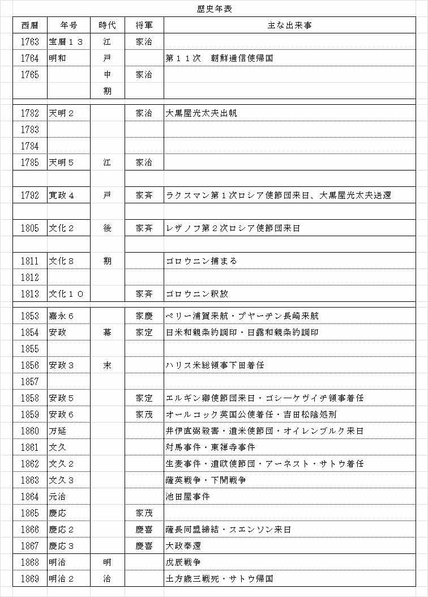
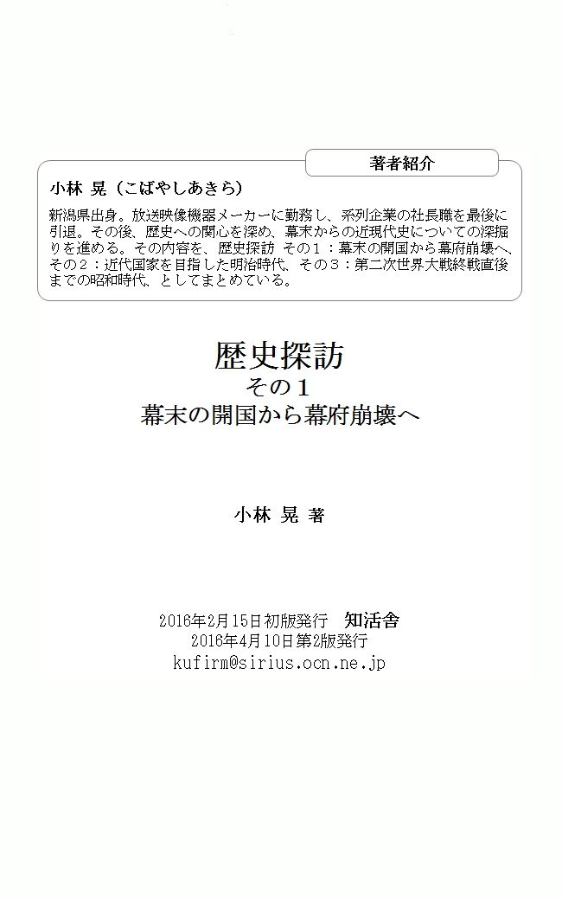

| 歴史探訪その１: 幕末の開国から幕府崩壊へ | |
| 小林 晃 | |
| KUFirm (2016) | |
日本は、長い鎖国から幕末に開国して外国の仲間入りをしました。しかし、先の戦争において連合国に敗れたことで国としての主権を失い、国際社会から隔離されました。この開国した一八五〇年頃から敗戦直後の一九五〇年頃までの約百年間における日本の歴史を振り返ってみました。
歴史に刻まれた事件などの出来事に関わった人物を通して歴史を見ることを主軸に考えました。そこで、幕末から明治にかけて来日した外国人の見た日本事情、あるいは日本人が海外へ出かけて見聞した外国事情など、本人の書いた記録である紀行文や回想録を通して、近現代の歴史を探訪しています。長く閉鎖されていた東洋の島国日本は、外国人にとって興味深い国でありました。また、幕末から明治初期にかけ海外へ出かけた日本人は、欧米の産業革命による優れた文明に接して驚きを受けました。開国して文明先進国から多くを学んだ日本は日清・日露戦争で勝利した結果、列強の仲間入りをして次第に軍国化への道を歩みだし、遂には無謀にも太平洋戦争へ突入してしまいます。当時の為政者は、どのような対応をしたのか、先の戦争で敗戦し占領された直後の日本までを検証しました。
全体を三回に分けて、歴史探訪その１は、幕末から開国にかけ江戸時代の海外交流や幕府崩壊までを、その２では近代国家を目指した明治時代を、その３では第二次世界大戦の終戦直後までの昭和時代を取り上げています。
歴史は、立場によって百八十度も見解が変わることから「歴史認識」という言葉に代表されるように、客観的に正・悪を判断することは難しいことです。特に近現代史は、現在に近い出来事ほど、真実が隠されていることが多く、秘密文書の開示や時代の変化から、事実関係が明らかになることがあります。
戦後暫くの間、小・中学年における歴史教育では、先の戦争で悪いことをした日本あるいは日本人という認識（とりわけ周辺諸国）により、あまり触れない、触れたがらない簡単な内容でした。しかし、将来に向けて友好的で平和な国際社会を実現するためには歴史から学ぶことが多く、その趣旨からこの本の題材を選んでみました。
平成二十八年二月 小林 晃
江戸時代の鎖国中にも隣国朝鮮と親善交流があったことは余り知られていません。
朝鮮通信使とは、徳川将軍が変わるたびに、朝鮮から表敬訪問のため日本を訪れた使節団のことです。計画や実行にあたっては、徳川幕府と朝鮮の間に挟まれ苦労した対馬藩の話など興味深い話も出て来ます。
一六〇〇年（慶長五年）美濃の国、関ヶ原で徳川家康軍（東軍）と石田三成軍（西軍）が闘い、三成軍が惨敗したことで家康は天下を取り、一六〇三年江戸（現在の東京）に幕府を開設しました。一八六七年第十五代将軍徳川慶喜が大政奉還するまでの約二百七十年間、徳川家による江戸幕府は続きました。
江戸幕府は封建体制を維持・確立するため、キリスト教などを禁止することで貿易統制を行い、海外の勢力が国内へ浸透することを防ぎました。一六三九年から日本人の海外渡航禁止政策を取る一方、中国とオランダのみに長崎港を通じて交易を許可していました。ペリーが来航し開国した一八五三年まで、約二百十五年間の長きにわたり鎖国は続きました。しかし鎖国中においても、対馬藩と朝鮮は公式に、薩摩藩と琉球王国（沖縄）は交易を通じて交流をしていました。最初の話は、鎖国時代でも続けられていた日本と朝鮮の国家的交流であった朝鮮通信使について紹介します。
日本統一を成し遂げた豊臣秀吉は一五九二年に朝鮮へ攻め込み、結果は秀吉の死で出兵を取りやめ戦渦は収まりましたが、七年も続いた戦争で日朝間に深い亀裂を残しました。この戦いは日本では「文禄・慶長の役」、朝鮮では「壬辰倭乱」と言い、日本に拉致された朝鮮人は三万人とも五万人とも言われています。
韓国の観光地には、この戦火で焼き払われ甚大な被害を受けたことを書いた看板が多く見うけられ、現在でも反日感情に強い影響をおよぼしています。秀吉後の徳川家康はこの戦後処理のため関係修復に努め、一六〇七年（慶長十二年）朝鮮から五百名の使節団が来日、その後一八一一年（文化八年）まで約二百年間、徳川の将軍が変わるたびに計十二回も表敬のため朝鮮から来日しています。朝鮮通信使は古くには室町時代前期の一三七五年（永和元年）から国史の返礼として始められていますが、通信使とは一般的に江戸時代の朝鮮使節団を示しています。
通信使の名前の由来は、信みを通じるというところから名付けられています。しかし、第一回から三回までの使節団は「壬辰倭乱」で日本へ拉致された捕虜を本国へ送還させることや、徳川政権の対外姿勢を確認することが目的であったため「通信」は妥当でないとして「回答兼刷還使」の名前が通例として用いられています。
この通信使の来訪により最終的に本国へ帰国出来た人は、三千人から七千人と言われています。このように少なかったのは、日本人との結婚や生活基盤が日本に出来て説得しても帰りたがらない人、あるいは陶芸など優秀な才能や技術を持っているため手放したくないとの日本側の勝手な態度などで、時間が経つにつれて帰国後の不安も含めて複雑な事情が背景にあったようです。日本の陶芸は、この朝鮮陶工の人達により優れた技術が持ち込まれ発達しました。
最終に近い第十一次の通信使であった金仁兼氏は、帰国後「日東壮遊歌」という本を書いています。この使節団がソウルを出発したのは一七六三年（宝暦一三年）九月で、帰国したのは翌年八月ですから約一年近い行程です。
日本の形式的な大名行列と違い、美しく着飾った民族衣装の楽隊や文化人（医師・画家・学者）など、五百名もの隊列を組んで街道を歩くわけですから、庶民にとっては物珍しい見世物でもあり、日本の知識人との交流も頻繁に行われていました。
一方、この使節団が通過する沿道の大名達は行列の警備や宿泊、お土産など接待に膨大な人手とお金を要していました。
朝鮮にとって「壬辰倭乱」で罪のない多くの人命を奪われ、王宮や人家を破壊し掠奪・放火し多数の人々を捕虜・連行した日本または日本人は、敵愾心を燃やす相手でありました。加えて、朱子学から「東方小華」の国であるとする意識が強く、日本のレベルは低いという認識でした。従って、朝鮮から通信使を派遣する交渉では、日本を対等か若しくは見下す朝鮮側と新生徳川幕府の間に入った対馬藩の苦労は大変でした。収入源の乏しい対馬藩としては、戦乱前（秀吉の侵略前）のように朝鮮と国交を回復して早く貿易を再開したいため、朝鮮側の意向に沿える偽装文を作り、何とか第一次の派遣を実現させました。また、その後も通信使の派遣要請や日本側責任窓口として、江戸までの往復には藩主並びにその部下を必ず同行させています。予定していなかった日光までの追加行程を要請した幕府側と、それを断った朝鮮側との折衝では板挟みになり、説得に困った対馬藩の役人は「もしこれ以上断るなら、ここで貴方と刺し違えて死ぬ」と迫り、朝鮮側は対馬藩の立場を考慮して日光行きを承諾したという緊迫した話もありました。
韓国と日本は二〇一五年十二月で国交正常化五十年の節目の年になります。韓国では、最近この通信使をユネスコの記憶遺産として残すことを計画しています。登録のため提出する記録資料は、日本も協力することになっています。竹島の領有権や慰安婦の問題などで、現在両国はぎくしゃくした関係にありますが、過去においては、鎖国中でもこのように豊かな交流があったことを踏まえて、将来へ向け良好な関係を築いていきたいものです。
参考文献
「日東壮遊歌」 金 仁兼著（第十一次朝鮮通信使） 高島淑郎訳 平凡社
「朝鮮通信使」 中尾 宏著 岩波新書
「大辞典ｄｅｓｋ」講談社
「日本史事典」 旺文社
江戸時代後期に起きた海難事故の話です。紀州から江戸へ向けて船頭大黒屋光太夫の乗った御用達船は折からの暴風雨に巻き込まれ航行不能となり、黒潮に流されてカムチャッカ半島の孤島に漂着しました。当時の和船は外洋航海に向かない構造であったための海難事故でした。しかし大黒屋光太夫達は、帰国したい一念でシベリアを横断し、ロシア皇帝に直接謁見して帰国を実現しました。鎖国している日本と交易をするためロシアが派遣した第一次使節団に伴われて送還されました。
江戸時代の初期、幕府は五百石以上の大型船の建造を禁止する「大形船建造禁止令」を出しました。和船は、西洋船のように船の中心となる竜骨を持たず、外板で波の応力を受けるモノコック構造であることに加えて、一枚舵、四角に張られた一本帆のみで、さらに積荷優先で甲板がないなど、嵐に対する備えに弱いという構造上の欠点がありました。その上、方位を見極める磁石などの計器がないため、沿岸の山や岬などの景色や天候、風向き、潮の流れを見極める船頭の感と経験によるところが多くありました。
今回は、紀州藩御用船「神昌丸」が嵐に巻き込まれ、船頭の大黒屋光太夫以下十七名が遭難した海難事故の話です。
一七八二年（天明二年）十二月十三日、三重県鈴鹿市白子町（伊勢白子浦）を紀州藩御用達の米を積んだ「神昌丸」は江戸に向けて出港しました。途中の鳥羽浦で天候をうかがい、風向きを探って遠州灘を一気に突っ切って伊豆の下田沖から相模灘を経て江戸湾浦賀に向かう予定でした。鳥羽浦でいったん碇を降ろすもすぐに出港しましたが真夜中に暴風雨に巻き込まれ、舵が壊されて浸水にも見舞われてしまいました。積荷の一部を海に投棄し、船体中央に突き出ている一本帆柱も転覆を逃れるため切り倒しました。舵も帆も失い潮と風の流れに任せて漂流を始めました。四月頃には積み荷の御用米を食べ始め、水は雨水を樽に貯めて飲料水としました。味噌と玄米だけの食べ物になり、栄養失調で最初の犠牲者となる磯八は四十三歳で亡くなりました。
七月、島に近づいたので艀で上陸し洞窟に入っていると、十一人の人が来て身振り手振りでついて来るように促されました。男達の長はニジモフというロシア人でした。漂流の末ようやく生きて島に辿り着いたのに、長い漂流で体が衰弱し、島の厳しい寒気にさらされて、十二月までに三津五郎、次郎兵衛、作次郎、表次郎の四人が相次いで亡くなり、生き残った者達も深い絶望感に襲われました。
光太夫達は言葉を覚える努力を始めました。言葉が分かるようになったことから、自分たちのいる場所はアリューシャン列島のアムチカ島で、ニジモフはロシア本国の豪商からラッコの毛皮を集めるため派遣され、島民を使って捕獲していることを知りました。島民には本国から送られてくる生活必需品や穀物を代償として与えているので、島民たちはニジモフらのロシア人に従属する形になっており、ニジモフは事実上島の支配者でした。ロシア本国から駐在していたニジモフと交代する要員を乗せた帆船が来ました。しかし、岩礁に衝突して破船してしまいました。光太夫達の協力により、破船した船と座礁した「神昌丸」から木材や釘をかき集め、流木も使って一年がかりで船が作り上げられました。光太夫たち六人はこの船に同乗して、八月二十三日にカムチャッカへ着きました。しかし、冬になって食べ物はなくなり、衣類や手ぬぐいまでも煮て食べました。そのため体は急激に衰弱して、残っていた九人から与葱松、勘太郎、藤藏が死亡し、六人になりました。
光太夫の所に混血児が訪ねてきました。その親は南部藩佐井村（青森県下北郡佐井村）の水主でした。一七四四年（延享元年）十一月二十八日に、大豆や干魚を積んで佐井港を出港し江戸に向かう途中、下北半島沖で漂流し、千島列島のオンネコ島に漂着しました。漂流中に七人が死に、残った十人はコサック隊長に保護されてカムチャッカへ連れてこられました。その混血児の父親はロシア人の女性と結婚して男と女の子二人の子供をもうけ四人で暮らしていました。その父は、日本から漂流して必ずこの地に送られてくる日本人がいるはずだと、楽しみにしていましたが、四、五年経っても誰も来ないので、子供達に一生懸命日本語を教えたとのことです。訪ねてきた息子たちは、自分の父とその仲間達は、故国に帰ることを日夜狂おしいばかりに願い、もだえ苦しみながら日々を過ごしてきましたが、かなわぬことを知りロシアで妻を娶り気持ちが落ち着いたということです。そんな父のことを話して、混血児はあなたたちもこのロシアで平穏に生きることを願っていると言いました。それに対し光太夫は、日夜故国へ帰ること以外考えたことが無い、と語気を強めて答えました。それほど思っているのなら、個人的に思っているだけでは何も解決しないので、役所に願い出るようにと、オロシャ語で願い書を書くことを教えてくれました。
願い書を受け取った役人は、任期を終えてオホーツクへ帰るところなので一緒に連れて行くと言いました。到着したオホーツクの代官は、あなた達はこの地からヤクーツクへ行く必要があると言い、これから先は少しも不自由しないから安心しなさいとも言いました。十一月九日ヤクーツクに着きましたが、そこはロシアで最も寒い土地で、露出していられるのは目だけという極寒の地でした。そしてヤクーツクの代官から、あなた達は、ここからイルクーツクへ行ってくださいと言われ、十二月十三日役人・馬方など十八人は六頭の馬車に引かれた二つのソリに載せられたキビッカ（輿のようなもの）に入り、イルクーツクへ向けて出発しました。キビッカの中は、氷が張り鋭く光っている、まさに氷の室でした。途中の宿場で寝ては、朝新しい馬に変えながらの長旅で、二月七日にようやく三千戸もある大きなイルクーツクの町に到着しました。しかし、庄蔵は足が青黒く変色して凍傷に罹り、イルクーツクの病院で左足を切断する手術を受けることになりました。
この町でカピタンという人物が光太夫を訪ねてきました。公用で来ていたイルクーツクの役所で光太夫達が滞在していることを知り訪ねてきたということで、カピタンはキリロ・ラクスマンという政府高官にも通じている人物でした。カピタンはキリロに紹介してくれて、キリロからイルクーツク長官でもある陸軍中将へ願い書が渡される約束をしてくれました。ここイルクーツクにも、日本人との混血児が三人いました。父親はいずれも日本人の漂流民で、ロシア人妻との間に生まれた子供達でした。ロシアは、金銀が豊富である日本に強い関心を抱いていて、日本の東側を流れている黒潮は漂流した船がカムチャッカ半島付近に漂着するので、その漂流民である日本人は願ってもない存在でした。彼らを教師にして、ロシアの子弟に日本語を教えさせていました。また、ロシアの宗教に帰依させ洗礼を受けさせることで、キリシタン禁制の日本へ帰国することを断念させていました。光太夫は同じ運命に引き込まれる恐怖を感じました。キリロ・ラクスマンは、日本について「日本はオランダと清国のみに交易を許している。ロシア皇帝は日本との交易を望んでいて、冬季に凍結しない日本の港には魅力があり、それらの港にロシア船が出入り出来ればロシアは大発展する。それに金と銀だ」と語りました。
帰国願いを出した都の役人から、帰国を思いとどまるようにと言う手紙が届きました。その内容は、「仕官する気がないのなら商人になったらどうか、それに必要な資金を与え税金も免除して店も家も都合する。もし、仕官するのなら、初めは下役人だが優先的に昇進させる」という内容でした。キリロも「これ以上考えられない優遇だ」と光太夫達を説得しましたが、彼らは切々と望郷の念を語り故郷に帰ることを訴えました。キリロは、それなら、皇帝に直訴するので同行するように、と言ってくれました。光太夫は、日本ではそのような行動に出れば、たちまち極刑に処せられると心配しましたが、キリロは「わが国ではそのようなことはない、あなたが皇帝に会って直接願書を渡せるように力を尽くす」と言ってくれました。
いよいよ正月十五日、首都ペテルブルクへ向け馬ソリで出発して二月十九日に着き、外務大臣代行へ帰国の願い書を提出しました。避暑のため王宮から二十二里離れたツワルコエ・セロという場所の別宮にいる女帝エカテリナに六月二十八日商務大臣、外務大臣代行、それとキリロに付き添われ直訴に行きました。その結果、九月二十九日外務大臣代行宅に呼ばれ「願イニヨリ帰国ヲ許ス」という文面が読み上げられました。女帝からメダルや時計、金貨などの他、帰国の費用も下賜されました。キリロの次男であるアダム・ラクスマンの率いる使節団に連れられ、オホーツクから商船「エカテリナ号」に総勢四十二名が乗り込み、日本へ向かいました。
キリロは帰国にあたり「日本の国体、教育、礼儀、制度は最高水準であり、それに軍事、武備も整っていて武芸の修練は厳しく刀剣、弓矢の質は世界で最も優れている。それなのに日本人は、外国人に対して事の外、恐怖心を抱きわがロシアをも恐れていると聞く。なぜこのようになったかと言うと、長い間日本との貿易で多大な利益を得ていたオランダが、外国は怖いと日本人に吹き込んだからである。日本の政治、軍事、経済は非の打ち所がなく、外国から侮られることは全くない、貴方が日本に帰ったらこのことを日本人達に告げてほしい」と言いました。
一七九二年（寛政四年）十月二十日、遭難してからちょうど十年振りに、小市、磯吉、光太夫の三人は念願かなって故国に送還され、帰国を果たすことが出来ました。
松前藩の役人達は最初彼ら三人を日本人を装ったロシア人ではないかと疑いました。松前藩は江戸表に急飛脚でロシア船の来航と三人の漂流民が送られて来たことを知らせ、ロシア船が到着した根室海岸の小屋で返事を待たせました。松前藩の役人は、使節団長のラクスマンと会談を行い「連れて来た漂流民三人を引き取るので即刻ロシアに帰るように」と要求しました。ラクスマンは顔色を変えて「漂流民を日本へ引き渡すように女帝から命を受けて万里の波濤を越えてやって来たのであるから、幕府の役人と正式に対面した上で引き渡す」と言いました。その結果、水先案内に来た「禎祥丸」に先導されて根室から六月八日箱館（現在の函館）に入港し、箱館から松前までは四百五十人の大行列で松前藩に到着しました。
一七九三年六月二十一日、幕府から派遣された目付役石川将監、村上大学は一行と応接し、漂流民を送り届けてくれたお礼に百俵の米を贈りました。ラクスマンは「ロシアは、この機会に日本との友好協約を締結し、漂流民を江戸の最高役人へ直接引き渡す」と要求しました。
三回の会談を通じて、幕府側からは、漂流民を受け取った上で応接は長崎で行うと、ロシア船の長崎寄港を認める信牌が与えられました。しかし、ラクスマンはすぐには長崎に行かず、七月十六日箱館を出港してオホーツクへと帰国の途につきました。
結局九ヶ月も日本にいたことになりますが、目的の友好協約は締結出来ずに帰国しました。
幕府にとって帰還した光太夫と磯吉は貴重な存在とされました。
ロシアという国のあることはオランダから聞いていましたが、十年間の滞在中にロシアの高位役人とも接して政治機構、経済、宗教、風俗、海運などの知識を得ていて、さらにロシア語まで読み書き出来る貴重な人物でした。
幕府から光太夫達に対しロシアに関する多くの質問がなされ、蘭学者の桂川甫周がそれらを基に「北槎聞略」という本に纏めました。
話は変わり、年代の下がった一八〇五年（文化二年）十二月、ロシアから四名の漂流民が江戸に入ってきました。彼らは陸奥国石巻（宮城県石巻市）の「若宮丸」で、光太夫達が帰還した翌年の十一月に江戸へ向かう途中で遭難してロシア領に漂着しました。十六名の乗組員のうち帰国できたのは四人でした。
彼らはロシアの文字を理解していなかったので、江戸の洋学者大槻玄沢が彼らから聞き取り調査をしました。その膨大な資料を光太夫は校閲したのですが、その記録には偶然にも、ロシアに残してきた仲間の庄蔵と新蔵のことが書かれていました。
「若宮丸」の乗組員のうち、病死や洗礼を受けた者を除く十名が、日本語学校の教師になっていた新蔵に付き添われて首都ペテルブルクへ行き、女帝エカテリナの死後、皇帝となっていたアレクサンドル一世から帰国の許可を受けて、最終的に四人がロシア使節のレザノフに連れられ長崎に帰り着きました。
この四人の漂流民を帰還させたレザノフ使節団は、先にラクスマンが持ち帰った長崎寄港を認めた信牌を持って、ラクスマンの第一回目に続く第二回目の遺日使節団として来日したのですが、江戸幕府はまたも相手にせずと追い返してしまいます。その後、一八〇六年から翌年にかけて、樺太、択捉島にロシア船が来て、日本の会所や運上屋が襲われました。それは、ロシア使節の通商条約締結要求に対して幕府が拒否した報復処置でした。この四年後に次回紹介するゴロウニン事件が起きます。
江戸時代に起きた海難事故の話ですが、台風や日本列島に沿って流れる早い潮の流れなどで、海難事故の多かったことがうかがえます。
光太夫たちは帰国の強い願望を叶えるため、何度も挫けそうになりながら、身に付けたロシア語を駆使して意思の疎通を図り、巡り合ったロシア人の協力も得て、遂に女帝エカテリナへ直訴することが出来て帰国を実現させました。
目的を実現するため、異国の地で多くの困難を克服しながら努力した強い意志と勇気は、現在のわれわれにも大いに学ぶことがあることを教えてくれます。
参考文献
「大黒屋光太夫」 吉村 昭著 岩波書店
江戸時代に北方領土で起きた、ロシア軍艦の艦長であるヴァシリー・ミハイロヴィチ・ゴロウニン少佐ら八名が日本の役人に国後島で捕まり、松前藩の牢獄に幽閉された話です。彼らの釈放は、報復処置としてロシア側に拉致されていた回船商の高田屋嘉平衛らとの人質交換として行われました。帰国後、ゴロウニンは体験談を本に纏めて出版しましたが、当時鎖国していた日本を知ることの出来る、西側諸国にとって貴重な内容の文献になりました。
今から約二百年前の一八一一年（文化八年）、千島列島の測量を目的にオホーツク海を南下してきたロシアの軍艦「ディアナ号」の艦長ゴロウニン少佐他七名は、国後島に上陸したところで幕府の役人に捕まり、一八一三年九月までの二年三ヶ月間、牢屋に投獄されました。ゴロウニン少佐、ムール少尉、ブレブニコフの三士官とクリル人通訳アレキセイ、それに水兵四人です。
帰国後の一八一六年に、ゴロウニンはこのことを本に書きました。この本は獄中の出来事だけでなく、日本の習慣、宗教、政治体制、それに日本人の勤勉さや聡明で礼儀正しく優れた国民であることなど、幽閉された身でありながら、日本および日本人を高く評価した内容として書いています。当時、欧米において鎖国していた日本の事情を知ることの出来る数少ない貴重な資料となり、ヨーロッパの数ヶ国語に翻訳されペリーやプチャーチンも読んだとされています。
投獄中に脱獄を計画しています。仲間のムール少尉は計画に反対していたことから日本の役人に内通される恐れがあるため、ムールと通訳の二人を除いた六名が脱獄をはかりました。必死で見つからないように、昼間は穴の中に隠れ、人気のない険しい山道や海岸を逃げていましたが、彼らの動きは捜査していた日本の役人側には完全に追跡されていました。
牢屋の中で、牢番などの話の様子から釈放の見込みがないことに絶望して、遠い異国の地へ帰る当てもないまま六晩も逃げ回った末に捕まってしまいました。
しかし、お咎めを受けなかったばかりか、同情までされたことに驚いています。当時の日本人の寛容さにはゴロウニンでなくとも驚きます。付け加えればこの脱獄で、日本側役人の責任者は降格処分させられています。
ゴロウニン艦長他七名はなぜ国後島で捕まったのでしょうか。
それは、彼らが来る前の一八〇七年（文化四年）ロシアのダヴイドフやフオヴストフらが、択捉島や樺太に上陸して略奪や放火などの海賊行為を行ったため、幕府がロシア船打ち払いの命令を出して北方の厳重警戒を敷いていたためでした。そこへロシアの軍艦「ディアナ号」が来て、乗組員が国後島へ上陸したため、警備中の役人が捕縛したわけです。
投獄したゴロウニンたちを尋問した松前奉行の荒尾成章や服部貞勝は、彼らに掠奪の目的がないことを知り、ダヴイドフらの行為の謝罪書やゴロウニンらの放監願いをシベリア政府から公書として取り寄せました。さらに高田屋嘉平衛の尽力もあって、幕府は釈放を決め、彼らを帰国させることを松前藩に許しました。
ゴロウニンらを救出するため「ディアナ号」の副艦長であるリコルドは報復処置として、択捉島から箱館に向かっていた回船商の高田屋嘉平衛が乗る「観世丸」を拿捕して、嘉平衛と水夫四人を人質に取りカムチャッカへ連れて行きました。
この時のロシア側の対応は極めて寛大で、当初こそ嘉平衛らは捕虜として扱われましたが、やがてロシア人と同じ建物に住まわされ、リコルドとの人間関係もできました。嘉平衛は、ゴロウニンたちとの人質交換にあたり、ロシア側と日本の仲裁調停役として尽力しました。高田屋嘉平衛の命を惜しまない泰然自若とした行動は、司馬遼太郎の小説「菜の花の沖」にも書かれています。一八一三年九月ゴロウニン他七名全員は、箱館に来たリコルドに引き渡され、この事件は解決しました。ゴロウニンの釈放にあたり、ムール少尉が日本に残りたいと言ったことや帰国後自殺したことなども、ゴロウニンが帰国後書いた「日本幽囚記」に載っています。
二〇一〇年十二月十三日ロシアのシュワロフ第一副首相は、十一月のメドベージェフ大統領に続き北方領土の国後島と択捉島を訪問しました。
同年九月に起きた尖閣諸島での中国船による、わが国巡視艇への衝突事件は領有権を主張する意思表示です。
ロシアや中国のこのような動きは、当時日本の政権政党であった民主党の弱腰外交に対して、強い自国の主張を示す行動であることは明らかです。
北方領土の領有権を巡っては、両国間に長い歴史があることで、本書内でも後で何回か交渉話が出てきます。
参考文献
「日本俘虜実記 上・下」、「続日本俘虜実記」ゴロウニン著 徳力真太郎訳 講談社学術文庫
日本を鎖国から開国したことで有名な米国ペリー提督自身の書いた遠征日記からの紹介です。マシュー・カブレイス・ペリーは日本の固い鎖国という扉をこじ開けました。その後列強各国は次々と渋る幕府に開国させました。
ペリー来日以前に、ロシアも二回にわたり交易をするため使節団を送り込んでいますが、幕府は頑として開国しませんでした。この本を読むとペリーの開国に対する姿勢は、並々ならぬものがあったことが解ります。彼らが上陸した横須賀には、現在ペリー公園があり上陸記念碑が建っています。
ペリーは来日にあたり米国大統領から将軍宛に書かれた書翰を持ってきました。その全文は、この遠征日記に掲載されていますが、大変友好的な文面です。そして、本国からは日本との交渉は友好的、紳士的に進めるよう指示を受けています。
しかし、米国海軍司令長官としての軍人ペリー提督は、軍事力を背景にした強引な態度で開国させる決意をもって来日しました。従って、今回の話は黒船来襲という題名にしています。
今から約百六十年前の一八五二年十一月（嘉永五年十月）、ペリーは軍艦「ミシシッピー号」に乗り米国のノーフォーク港を出港しました。大西洋を横切り、アフリカ大陸南端の希望岬からインド洋へ入り、シンガポールを経由して、一八五三年五月二十六日、琉球王国（現在の沖縄）に到着しました。当時の蒸気船は動力源として石炭と水を必要とするため、太平洋を直接横断することは出来ず、大西洋を横断して途中の寄港地で本国からの運搬船が運んできた石炭や水の補給を受けながら、西回りの長旅で日本に来ています。
琉球王国では武力を背景にして強引に国王との謁見を果たしました。その後すぐ日本に向かうのではなく驚くべき行動に出ています。
それは小笠原諸島へ日本との前線基地として、また捕鯨船の避難港としての目的で測量行動をしていることです。
香港駐在の英国提督ジョージ・ボンハムは、ペリーに対し小笠原諸島は一八二七年に英国が占領した領土であると主張しました。しかし、日本が一六七五年（延宝三年）に、米国も一八二五年（文政八年）に来ており、英国が最初に発見したという根拠で統治権を要求することは出来ない、とペリーは反論しています。
幕府はペリーの遠征日記の翻訳本や遺米使節団からの情報で、英・米両国が小笠原諸島に強い関心を持っていることを知り、江戸時代末期から付近の測量や移住を積極的に進めました。
このような歴史を経て先の戦争で一時的に米国に接収されはしましたが、その後返還され現在は東京都所属の日本領土になっています。
さてペリーは、小笠原諸島の測量後また沖縄へ戻り、ここで「ミシシッピー号」に加えて「サスケハナ号」、「サラトガ号」、「プリマス号」の軍艦を集結して、一八五三年七月八日（嘉永六年六月三日）東京湾の浦賀沖に投錨します。
幕府は浦賀副知事の中嶋と通訳の掘を応対役として、旗艦「サスケハナ号」での面会を要求しますが、ペリーは、自分に見合ったしかるべき地位の人としか会わないと拒絶し続け、威厳を誇示しました。
ペリー抜きの予備会談で、米国は大統領の書翰を持ってきたと伝えましたが、中嶋はわが国の外国窓口は長崎であると主張しました。ペリーは日本側の拒否に対して三日間の猶予を与えるとして、「ミシシッピー号」とその舟艇を、測量を兼ねて東京湾の奥まで進め回答に圧力をかける行動に出て、あくまで交渉ではなく武力をもってねじ伏せる決意を示しました。まさに軍事力による恫喝外交です。
恐れをなしておびえた幕府は、久里浜で応対すると回答をしたので、艦隊は久里浜沖へ移動して、七月十四日（嘉永六年六月九日）約四百人の士官・水兵・海兵隊が上陸して隊列の後にペリーも続きました。幕府側は浦賀奉行戸田伊豆守をはじめ六百人が武装整列して米国側を迎えました。
大統領の書翰やペリーの信任状などは、英語・オランダ語・支那語で書かれ、戸田伊豆守に渡されました。
幕府の受領書は「ここは外国と交渉する場所では無いため会議も饗応も出来ない。書簡を受領したことでもあるので、ここを立ち去っていただきたい」という文面でした。ペリーは抗議の意思を示すため、艦隊を江戸湾奥まで進める示威行動をしました。そして「日本政府への提議は非常に重要であり審議に多くの時間を要するであろうことを考慮して、来春また江戸湾に来るまで待つ」という文面を残し、八日間滞在した江戸湾を離れました。
その後琉球王国に立ち寄り、香港へ向かいました。その頃、中国では政治情勢が険悪で、広東にいた米商人たちから安全を守るための保護願いが出されていたので、ペリー艦隊は広東で警備にあたりました。
ペリーは上海で、既に日本に来て通商条約の交渉をしているロシアのプチャーチンの情報を知り、条約締結に遅れを取ってはいけないと、中国に駐在の中華弁務官マーシャルからの警備継続要請を振り切り、当初の予定を早めて冬の悪天候の中、一八五四年二月十三日（安政元年一月十六日）米艦隊を率いて再び浦賀沖に戻ってきました。
幕府との間で会談場所を巡り毎日のように押し問答が繰り返されて、ようやく横浜で交渉することを日本側に承知させました。
横浜の交渉用建物が完成した三月八日、完全武装した米国の約五百名が上陸し、会場へと行進しました。
会談は難攻しましたが、三月三十一日ようやく日米和親条約（神奈川条約）が締結されました。
二〇〇四年三月二十一日は日米和親条約締結百五十周年でした。これを記念して両国の江戸東京博物館において展示会が開催されました。日本人はもとより外交官関係者と思われる外国人も多く訪れ熱心に見学していました。
日本人の一般的な理解としては、この条約は無能な幕府がアメリカの軍事力に屈して極端な不平等条約を締結したことになっていますが、これは明治十年以降に条約改正を政治課題にあげた明治政府の政治キャンペーンの結果であり、実際の資料を調べてみると実情からかけ離れていると、加藤祐三氏は自書の中に述べています。
話は戻り、ペリーとの会談中は艦艇を見学させたり、文明の高さを誇示するため贈呈用の小形（ミニチュア）蒸気機関車と客車を走らせたり、実用的な発明品や農機具などの展示を行ったりして、好奇心の高い日本人を驚かせています。日本側は力士による米俵運びや相撲を披露していますが、ペリーはあまり感動しなかったようです。
一八五四年四月二十五日午前二時頃、下田沖に停泊していた「ミシシッピー号」に二人が手漕ぎの船で近づきました。瓜中萬二こと吉田松陰（二十五歳）と市木公太こと渋木松太郎（別名金子重輔・二十四歳）の二人です。
旗艦では、通訳を出して要望を聞いたところ「合衆国へ行き、世界を見聞したい」ということでした。この行為はアメリカでは許されているものの、日本では犯罪であり、相手国の法律を尊重する必要があることから二人は引き返されました。
この密航を企てた罪から、吉田松陰は下田で自首して伝馬町の牢屋へ送られましたが、老中阿部正弘に助命され出身地の長州藩野山獄に戻され幽閉されました。
その後、吉田松陰は一八五五年（安政二年）松下村塾を開塾し、久坂玄端、高杉晋作、伊藤博文、山縣有朋、吉田稔麿、入江九一、前原一誠、品川弥次郎、山田顕義など明治時代に活躍する多くの優秀な人材を育てたことで有名です。しかし、一八五八年井伊直弼による安政の大獄で死刑を言い渡され一八五九年享年二十九歳の若さで斬殺されました。
ペリーらの宿泊場所になった下田市了仙寺には、現在、上陸時の様子の描かれた看板が境内に建っています。ペリーは調印後、下田から開港予定の箱館へ行き、また下田に立ち寄ってから琉球王国へ向かい、神奈川条約とほぼ同じ内容の琉球条約を締結して七月十七日香港に戻っています。香港では次席の士官へ司令官の職を渡し二年二ヶ月後にニューヨークへ帰国しました。
ペリーの後、一八五六年アメリカ総領事としてタウンゼント・ハリスが来日し、日米通商条約の締結を要求してきました。この時も交渉を引き延ばす幕府の態度に苛立ち、英国艦隊が日本沿岸に来て中国と同じ目に合わせることをちらつかせました。ペリーの時と同じように外国との戦争になることを恐れた幕府は、一八五八年七月二十九日、京都にいる天皇の承諾を得ずに日米修好通商条約を締結しました。
その後この条約を雛形として、ロシア、オランダ、イギリス、フランスとも通商条約が締結され、「安政五ヵ国条約」と呼ばれました。この条約の勅許を巡っては、井伊直弼と水戸藩主の対立につながる問題を引き起こし、さらに明治政府も大変苦労することになります。
参考文献
「ペリー日本遠征日記」ペリー著 金井 圓訳 雄松堂出版
「幕末外交と開国」加藤祐三著 講談社学術文庫
ペリーに遅れること約一ヶ月後に日本へ来航した、ロシアのエフィーミー・ヴァシーリエヴィチ・プチャーチン提督の話です。ペリーは非礼な砲艦外交を展開したのに対して、プチャーチンは幕府の要求通り礼儀正しく長崎を訪れ、その結果先陣争いを急いだペリーに日本との通商条約で遅れを取りました。プチャーチンは、交渉を通じて親日家になり、明治十四年に勲一等旭日大綬章を明治政府から贈られています。幕末から明治期の北方領土問題を解決して、日本との友好関係を築いたロシア人のプチャーチンとは、どんな人物だったのでしょうか。
プチャーチン提督率いる第三回目の遺日使節団に同行したゴンチャローフが書いた本から、この時の様子を紹介します。
日本側交渉掛の川路左衛門尉聖謨は、勘定奉行兼海防掛を務めていましたが、日本側首席全権の筒井肥前守政憲は七十六歳と高齢のため、事実上は五十二歳の川路がプチャーチンとの交渉にあたりました。
その川路が「長崎日記」として記録していたので、それを読むことでロシア使節団の詳しい様子を知ることが出来ます。
アメリカのペリーは一八五二年十一月日本へ向けて出港しましたが、ロシアは事前にペリーの出航計画を入手していて、海軍中将プチャーチンを遺日使節団長として任命し、一八五二年十月首都ペテルブルクのクロンシュタット港を出帆させました。古い三本マストの帆走船である軍艦「パルラダ号」は、喜望峰を回り、インド洋を横切り、小笠原諸島に到着しました。小笠原で四隻の艦隊を組んで一八五三年八月（嘉永六年七月）長崎港に投錨します。ペリーの浦賀沖到着に遅れることわずか一ヶ月後になります。当時の狂歌に「太平の眠りを醒ます上喜撰たった四杯で夜も寝られず」と、蒸気船をお茶の銘柄にたとえての洒落でありましたが、幕府の役人や庶民にとって枕を高くして寝られない厄年でした。
余談ですが、この上喜撰というお茶は本来宇治の銘茶なのですが、神奈川県の浦賀駅に近いお茶屋さんが静岡産のお茶を当時の製法で復刻製造販売されていて、最近友人が送ってくれたので飲みましたが美味しいお茶でした。
一八五三年六月二十六日、プチャーチン使節団を乗せた「パルラダ号」は寄港地の香港を出港しました。日本へ向かう七月八日から九日にかけて、台風に襲われ小笠原諸島父島の二見港に入りました。ここでカムチャッカから来たコルベット艦「オリーヴツア号」と、シトカから来た運送船「メンシコフ公号」、スクーナー船「ヴオストーク号」と合流して長崎港へ向かいました。一八五三年七月十八日、長崎港に艦船四隻で到着して、長崎奉行応接掛の馬場五郎三衛門らが「パルラダ号」を訪れました。短時間のうちに出入りした日本人は約六十名にもなり、いろんな質問をした中に「どうして一通の書翰を四隻の船で運んで来たのか」という皮肉な質問もありました。ゴンチャローフは「あの柔和で平べったい色白の柔弱な顔や狡猾そうな表情、チョン髷や跪座している有り様を眺めて微笑を禁じ得なかった」と述べています。以前この国で捕虜になったゴロウニンたちに日本人は朝から晩まで質問したことを思い出し、この程度の質問ならば、そうばかげたことではないとも書いています。
長崎奉行大沢豊後守乗哲は、幕府にプチャーチンが持参した老中宛の書翰受け取り可否について、問い合わせの使者を江戸に送りました。幕府の返書は「書翰は受け取らざるを得ないが、ペリーと同様ひとまずお引き取り願いたい」という指示でした。これを受けてプチャーチンは書翰を受け取るための儀式に関する打ち合わせを八月十五日から始め、八月十九日書翰の受け渡しは終わりました。プチャーチンは老中からの返事を迫ったのに対して、奉行は「長崎と江戸の距離が離れているので、返事は短期間で受け取ることは困難である」と答えました。すかさず、プチャーチンは「それなら自分たちが船で江戸に向かえば一週間ほどで行ける」と言い大沢奉行を困惑させました。
江戸からの返事が来ない上に、九月十九日十二代将軍徳川家慶が亡くなったとの連絡がありました。家慶の葬儀と新将軍の就任などの儀式が重なるので、江戸からの返事はさらに遅れるとプチャーチンに告げたところ、将軍の死以前に老中へ出した書翰であり、いかなる事情があっても国務の遂行に遅滞があってはならないとして、自分たちは回答が来るまで日本の沿岸から離れないと、隠忍自重の温厚一辺倒ではないとする姿勢を見せました。
十月二十三日プチャーチンは江戸を出発した幕府の全権が長崎に着く間、情報収集や数ヶ月の食糧を貯えるため上海へ行くことを決め、奉行には行き先を告げないで「近いうちに日本に戻って来るが、もし全権が来ておらず当方の回答も得られない場合は直ちに江戸へ行く」という文面を残し長崎を去りました。
十月二十六日上海に到着すると、かねてより「パルラダ号」に代わる新造船「ディアナ号」が南アメリカを回って（パナマ運河は一九一四年開通で、この時は出来ていなかった）極東へ向かっているとの報告がありました。しかしこの時期、ロシアはオスマン帝国との間で戦端が開かれていて、イギリスとフランスが敵国になっていたので、イギリスの軍艦との接触を恐れて十二月五日長崎へ戻りました。
ここでクリミア戦争について触れておきます。
オスマン帝国（トルコ）領内の正教徒保護を理由に、ロシアはモルダヴイアとワラキアへ派兵し、これに対してオスマントルコは応戦しました。イギリス、フランスの支持を得たオスマン帝国は、一八五三年ロシアに宣戦布告して、クリミア戦争は始まりました。
そのためプチャーチンは、東洋にいるイギリスとフランスの軍艦に接触しないように、日本との交渉も急ぐ必要があったのです。
日本側は、いつもの常套手段である延引策を取りました。
上海から戻ったプチャーチンは全権が未だ長崎に到着していないことを知り、江戸へ向かうと激怒しました。十二月二十八日ようやく全権の筒井と川路が江戸から到着して一八五四年一月十二日（嘉永七年十二月十四日）ロシア使節団と全権の会談が行われました。
プチャーチンの筒井に関しての第一印象は、老年の魅力的な聡明さと善良さを兼ね備えた美しさは抜群と褒めちぎっています。また、次席の川路についても理知と果敢な風貌は好ましいと評価しています。しかし長崎奉行大沢やその他の役人達はそもそも反感を示すだけで、われわれにとっては顔も見たくないほどである、と手厳しい評価です。お互い初対面の挨拶が終わり、日本食を食べ終わったので提督から「二件の質問をしたい」と申し入れたところ、全権は「本日は初対面で用談は差し控えるのが日本の習わしです」と拒否しました。
ゴンチャローフは、日本の開国に関して次のように語っています。
「日本はいかなる戦争にも耐えられないほど弱い。例えばイギリス流に振舞わなければならない。すなわち、日本の港内に入り有無も言わさず上陸して、許可しない場合は喧嘩を始める。それから自分の国が侮辱を受けた如くに訴えて、戦争に持ち込むという寸法である。さもなければアヘンを持ち込んで、これに対して強硬な態度を取った際には戦争を布告するのである」と見解を述べています。
第一回目の正式な会談は安政元年十二月二十日長崎奉行西役所で始まりました。
日本側十二名（通詞二名）、ロシア側四名でロシア側から交渉の基本条件は国境画定と通商開始であると説明、日本側は交易するには準備が必要で、将軍交代のため政治日程は多忙を極めているので三年から五年は無理であると回答しました。
プチャーチンは、一、二ヶ月と言うなら分るが、三、五年も待つのは無理だとして再考するように求めました。
国境に関して川路は、ゴロウニンの意見を引用して、クルップ島を中立とし択捉全島を日本領土と主張したのに対し、プチャーチンはゴロウニンは国境画定の権限は有していないと反駁し、物別れに終わりました。
第二回目の会談は十二月二十二日に行われ、応対にあたった川路全権次席のことを、聡明で彼の一言一句、一瞥それに物腰までが全ての良識と機知と炯眼【洞察力が優れていること・・・広辞苑より】と練達を現し、叡智はどこへ行っても同じで民族、言語、宗教を異にして人生観が違うにせよ共通した特徴がある、とゴンチャローフは書いています。
川路は樺太について「北緯五十度に国境を設定するよう」提議しましたが、プチャーチンは「北緯五十度以南に炭鉱を開いているし日本人も居住していないので同意しがたい」と反論しました。択捉島についてプチャーチンは「日露両国民が居住しているので折半」と提議しましたが、川路は「古い記録によると千島全島は日本領土である」ことを主張して合意しませんでした。
次に通商問題に入り、プチャーチンは「江戸近海に支障があれば大阪でも良い。松前若しくは函館をロシア国艦船のため燃料、淡水、食料などの補給購買を認められたい」と要望したのに対して、川路は「他列強国との関係もあり急速に決定は難しい。ただし、この回答はイギリス、アメリカ、フランスとの通好条約を締結した場合は同一の特権をロシアに与える」と答えて解決しました。
プチャーチンは、国際貿易を振興させることは国富を増加することである、と懇々と説明しましたが、オランダとの交易で正貨流失の弊害に関する先入観に捉われている川路の諒解は得られませんでした。
嘉永七年一月四日最後となる六回目の会談では、領土問題は検討課題とし、通商条約はロシアに最恵国待遇を与えることで書類に纏められました。
結局、この会談では条約締結には至らなかったものの、相互の信頼関係を築くことが出来ました。
プチャーチンは一月七日長崎を退去し琉球へ向かいました。
一月十六日琉球の那覇港に到着して、ペリー艦隊が二日前に立ち寄り春まで待って再度日本を訪れることを知りました。
さらにプチャーチンは琉球の後に立ち寄ったスペイン領マニラで、ペリーが日本と和親条約を締結した報に接したので、嘉永七年三月二十三日再度長崎へ戻りました。しかし、幕府からの返事が届いていなかったので、沿海州のインペラトール湾に引き揚げました。
クリミア戦争で緊迫した事態と望郷の念から、ゴンチャローフ秘書はここで下船して帰国しました。
本国から二百七十九日の航海を経てやって来た新造船「ディアナ号」に乗り換え、八月二十四日単船で日本へ向かい箱館と大阪に立ち寄った後、日本側の指定である下田に着きました。
幕府の全権、筒井と川路の到着を待って十一月三日から交渉が始まりました。
日本側は、ロシアに対して最優先で条約を結ぶという約束にそむいて、アメリカと条約を結んだことにロシア側の態度が硬化するのではと懸念しましたが、順調に会談は行われました。
その結果、下田は即日開港、箱館と長崎は調印三ヶ月後に開港、千島列島のウルップ以北はロシア領、択捉島以南は日本領とし樺太は従来通り両国の共有とすることで合意して条約は調印されました。
本国のクロンシュタット港を出港してから二年数ヶ月の一八五五年二月七日ようやく日露和親条約締結にこぎつけて、プチャーチンは多いに喜びました。自分の命がある限り、日本に不利なことは絶対しないと祝辞を述べました。プチャーチンは上奏報告書に川路のことを「いかなるヨーロッパの社交界に出ても、その俊敏で健全な知性は巧みな弁論術ゆえに傑出した人物たりえるだろう」と評しています。
通好条約交渉を始めた直後の一八五四年十二月二十三日（安政元年十一月四日）、下田に停泊していた「ディアナ号」は、マグネチュード八．四の「安政東海地震」に襲われ津波により艦上の大砲は海に滑り落ち水兵も一人亡くなりました。下田の町は九割の家が全壊ないし流失しました。
プチャーチンはロシアの医師を伴い、下田の震災者に対して手伝いを勘定奉行に申し入れました。
安政東海地震で中断されていた日露交渉は、下田の「玉泉寺」において一八五五年一月一日再開し締結されました。【安政東海地震は安政年間に起こった地震の総称で、七年間に十三回も大地震に見舞われました】
地震に襲われ大破寸前になった「ディアナ号」は修理のため、一八五五年一月十六日西伊豆の戸田港へ向う回航中に、今度は暴風雨に遭遇しました。この時、大勢の日本人は、ロシア人乗組員を救出して宿泊、衣類、食糧などを官民挙げて提供しました。現在も沼津市戸田造船郷土資料博物館の前庭に、「ディアナ号」の大きな碇が展示されています。
帰国にあたり、「ディアナ号」から持ち出した荷物の中にあったヨットの設計図を基に新造船を作ることになり、一八五五年一月二十三日幕府へ建造を申し入れました。
洋式船の建造を学びたいという意向もあって、幕府は積極的に協力することになり、伊豆韮山代官江川秀龍を現地の責任者に充て、一八五五年四月二十六日二本マストのスクーナー型帆船を完成させました。その船は「ヘダ号」と命名されました。
それに五十人ほどが乗り組み、ロシア領ニコライエフへ無事到着しました。残りの船員たちは、中立国の船が戸田港に入港するのを待って、六月一日ようやくドイツ船「グレタ号」に乗り帰国の途につきました。しかし途中、クリミア戦争の敵国であったイギリス海軍に拿捕されてしまいます。この約二百八十人の乗組員に、後の初代日本領事になったゴシケーヴイチも乗っていました。彼らも九ヶ月後には釈放され、帰国することが出来ました。
帰国したプチャーチンは安政四年八月二十九日再び日本を訪れ、長崎で通好条約の追加条約に調印、翌年修好通商条約を下田で締結しました。
プチャーチンは通好条約締結の功績により本国において、一八五九年に伯爵の位を授けられました。
一八六一年には文部大臣に就任しました。しかし農奴解放改革を求めて高まったペテルブルク帝国大学生中心の学生運動に対する彼の抑圧政策が反発を招いたため、彼は文部大臣を辞任しています。その後、寂しい晩年を送っていたところに、日本政府から叙勲を贈られ喜びも大きかったことと察せられます。叙勲からおよそ二年後の明治十六年（一八八三年）十月二十八日に八十一歳で永眠しました。
四年後の明治二十年五月二十一日、プチャーチンの長女で皇后付女官をしていたオーリガ・プチャーチナが戸田市を訪れました。戸田市に金一封が贈呈され、三年後にもプチャーチンの遺言による遺産から千ルーブルが寄贈されました。オーリガは日本を訪問した四年後の明治二十四年に亡くなりましたが、彼女も遺産から八百ルーブルを日本に寄贈しました。
この直後の明治二十四年五月十一日、当時親善のため来日していたロシア皇太子ニコライは、琵琶湖遊覧の帰途に切り付けられる大津事件が発生しています。この事件で日露関係は深刻な危機に陥ります。
明治中期までの日露関係は非常に友好的であり、プチャーチンは、その娘の代まで両国の友好の木を大切に育て続けた功績は「国際交流において個人が果たせる役割の大きさをわれわれに示してくれました」と著者白石氏は述べています。
参考文献
「プチャーチン」白石仁章著 新人物往来社
「ゴンチャローフ日本渡航記」ゴンチャローフ著 高野明・島田陽訳 講談社学術文庫
イギリスは一八四二年アヘン戦争で清国に勝って香港を割譲させました。日本の幕末期であった頃までには、無敵の海軍力を背景にエジプトやインドなど世界中に植民地を作り、日本へ来るのは時間の問題でした。そして、一八五八年（安政五年）日英修好通商条約締結のため特派使節ジェイムズ・ブルース（第八代エルギン卿）を日本へ派遣しました。エルギン卿の秘書として使節団に随行し来日したオリファントの書いた本から、その様子を紹介します。
本題に入る前に日本の開国を勧告した有名な書翰を紹介します。オランダ国王ウイリレム二世が一八四四年（弘化元年）第十二代将軍徳川家慶へ長崎から届けた文面です。
『地球上における諸国民の交流は急速な発展を遂げ、反抗しがたい力が国民を互いに引き寄せています。蒸気船の発明により距離は縮小されました。この世界的な接近の中で閉じ籠ろうとする民族は、多くの人々にとって敵とみなされます。陛下の先祖が発布した法律が外国との交流を禁じたものであることは理解しています。老子曰く「英知が王座にあるならば、平和の保持を持って第一とする」と賢人は言っています。もし古い法律を厳密に施行することによって、平和攪乱の動機になるならば、理性はその法律を緩和することを命ずるでしょう。偉大な帝よ、外国との交流に反する法律を緩め幸福な日本が戦争によって荒廃しませんように。自国の利益で忠告しているのではなく、平和は友好関係によってのみ保持できるものであり、通商貿易により成立するものであることを、叡智を持って熟計されますように、シナの皇帝は長い無益な抵抗によりヨーロッパの武力に辟易して英国と和親を結んでいます。それにより元のシナの政策に錯乱を生じる五港をヨーロッパとの交易に解放されました』。
これに対する将軍の回答は、次のように注目すべき内容であります。「国王の筆跡は誠意ある通告であり、日本の君主は強い感銘を受けた。とはいえ、心の中に深く刻まれたことはあえて公にしない」というものです。
著者オリファントは、戦争と騒乱、貧困と窮乏に覆われていた清国に嫌悪の情を抱いていたさなか、日本の美しい風光や都市の繁栄、民衆の平和な生活と友好的な態度は予期していなかっただけに感激と喜びが大きかった、と書いています。
この時はわずか二週間の滞在でしたが、一八六一年（文久元年）日本公使館の第一書記官として希望通り再び来日します。
しかし、当時公使館にあてられていた港区高輪の東禅寺に水戸浪人が乱入して、腕と首筋に瀕死の重傷を負って帰国することになります。使節団として来日した最初の日本への信愛と好感は、無残にも厳しい現実と過酷な運命に晒されてしまいました。
オリファントの本には条約交渉の他に、日本人の生活や歴史など当時のヨーロッパから見ると地球の果ての未知の国であった日本に関する多くの情報を書いています。
例えば、キリスト教に関して「日本には三十五の宗派があり三十五の宗派を認めることが出来るならば三十六を許すことは出来る」と織田信長は言ったとか、「政治権力を手に入れるための手段として布教していることを警戒して豊臣秀吉は禁教にした」あるいは「最初に来日したヨーロッパの人達の野心的な下心と不誠実な謀計から日本人が激昂して、排他的な禁教と鎖国政策を取り恐怖からの影響を排除した」などです。
その他にも、一五八二年（天正十八年）四人の少年使節団がローマ教皇グレゴリー十三世に謁見した相当古い話から、一八六二年ヨーロッパ六ヵ国へ派遣した遺欧使節団は、日本の開港を五年猶予する承認を得て帰国したが、幕府はその条件を満たすどころか横浜における自由な取引すら制限した。また一八六二年九月の島津久光の大名行列を横切ったとしてイギリス人のリチャードソンが殺害された生麦事件のことなど、この使節団が帰国した後のことまで、日本を知るための情報として詳しく書いてあります。
日英修好通商条約は一八五八年に締結され、英国女王陛下から将軍へ快速艇「エンペラー号」が贈呈されています。
使節団が日本に到着した二日前の一八五八年八月十四日（安政五年七月六日）に、第十三代将軍徳川家定が死亡していますが、幕府はエルギン卿にそのことを隠していました。当時は将軍の亡くなったことは大分後になって公表するのが日本の習わしになっていました。
エルギン卿が締結した日本との条約に基づき、翌年に公使館が江戸に開設され、初代駐日公使としてオールコックが就任します。
参考文献
「一八五七年～一八五九年におけるシナおよび日本へのエルギン伯使節団の物語」二巻のうち、日本に関する部分の翻訳本である「エルギン卿遺日使節録」ローレンス・オリファント著 岡田章雄訳雄松堂書店
ヨシフ・アントノヴイチ・ゴシケーヴイチはロシアのプチャーチン海軍中将が来日して修好通商条約を結んだ結果を受けて、初代駐日領事として箱館に着任しました。ゴシケーヴイチはプチャーチン提督率いる遺日使節団において、中国語通訳として来日したことのある人物でもあります。今回は、このゴシケーヴイチの書いた本より幕末の出来事を紹介します。在任中に対馬割領を巡る事件も起きています。
ゴシケーヴイチ領事一行十五名は、一八五八年二月八日首都サンクトペテルブルクを出発して九ヶ月近い辛いシベリア旅行の末、一八五八年十月二十四日（安政五年九月三十日）箱館に赴任しました。シベリアは凍土が融けて湿地帯のツンドラ大地でした。そこを横断し、途中のバイカル湖やアムール川は船で渡り、ようやく日本に着いたのです。
初代領事館として他国に見ない充実したメンバーを整えたのは、日本との国交交渉を指揮したプチャーチン自らが考えた対日戦略でした。具体的には、造船技術者、司祭、天文学者などの人脈を揃え、先進国の科学知識を日本へ分け与えることで国民の心を掴み影響力を確保しようとしたのです。領事には日本との友好と信頼関係を樹立する訓令が与えられていました。
赴任十ヶ月後の一八五九年八月（安政六年七月）、ムラヴイヨㇷ東シベリア総督は、ゴシケーヴイチ領事を訪れた後、軍艦九隻を率いて江戸へ行き、サハリンの領有権交渉をしました。
その折に、ロシア交渉団海軍士官のモフエット少尉と水兵二人が神奈川で殺害される事件が発生しました。前年、清国に対する「愛理条約」締結で大きな領有権を得た余勢を駆って、サハリンをロシア領と認めるよう求めたムラヴイヨㇷの高圧的な態度は、日本国内にロシアへの恐怖心と反発を与えました。
一八六一年一月三日付の本国へ送った日本情報には「日本人は最初に思われたほど単純ではありません。しばしば発生する条約不履行は、無知のためではなく、外国人を排除するための恒常的かつ体系的な努力が払われていることが徐々に明らかになってきました」と報告しています。
また、アメリカ駐日公使館通訳のオランダ人ヒュースケン殺害事件についても「一度ならず発生している外国人の殺害事件、そして犯人を発見して罰することに対する政府の動きの明白な怠慢さは二つの推論を導きます」と述べています。すなわち、「政府はそのような行為を見て見ぬふりをして黙っていることでそれを奨励し、その上で外国人を怖がらせて一箇所に集め、出島でオランダ人に対して彼らが持ち得たような、外国人を思いのままに動かす力を持とうとしているのか、あるいは政府は実際のところ自分の無力さを感じていて、現体制に不満な党派を抑制出来ずにいるのか、のいずれかです」と報告しています。
一八六一年三月一日（万延二年二月三日）から九月七日（文久元年八月十五日）までの約半年間、ロシア軍艦「ポサードニク号」が、船体修理を口実に対馬に居座り続けた「対馬事件」が発生します。ことの発端は英国でした。一八五九年五月七日対馬中部西海岸の尾崎浦に英国軍艦「アクテイオン号」が停泊して、食料品の買い入れを申し入れました。対馬藩は、牛は田畑を耕すために飼養するもので断じて売ることは出来ないと拒絶しました。しかし、結局これを受け入れましたが、湾内を測量し、また上陸して村の中を歩き回り、二十日後にようやく出港しました。そして、同じ年の十一月さらに一隻の軍艦を伴って尾崎浦に再来して、この時は一週間だけ停泊して去りました。
この英国軍艦の行動に対して、ゴシケーヴイチは本国へ次のように報告しました。「噂によりますと英国は、日本領土をロシアの手から守ることを約束する見返りとして、日本政府に対馬を自発的に譲り渡すように提案したとされます」。これに対してリハチョフ東洋艦隊司令官は過激に反応し、「ロシアにとって望ましくないのはサハリン、箱館、対馬が敵対する強国の手に落ちることであり、三拠点全てと言わないまでも最も重要な対馬を我が物とすべきです」と、英国の動きに警戒心を表しました。英・露の敵対関係は、一八五三年から一八五六年まで戦ったクリミア戦争以来続いていました。上申書を受け取ったコンスタンチン大公は、皇帝陛下アレクサンドル二世の指示を仰ぎ、「対馬に施設を作る権利を上手に手に入れる。そのためには、中央政府と関係なしに現地大名あるいは領主との友好取引だけで行うように」と、リハチョフ司令官に指示を出しました。
ゴルチャコフ外相は、外交問題にならないよう島の地方政府とだけ交渉し、日本政府からの公式な抗議を受けないように対処することを求めています。クリミア戦争で強引にトルコに攻め入った結果、英・仏両国の介入を招き手痛い敗北をした反省から各国と友好関係を重視するゴルチャコフ外相は、問題を海軍の責任下に押しやり、外務省は一切関係ないとのスタンスを取りました。そして「ハト派は弱い、結局タカ派の言いなりになる」という政治の箴言【戒めとなる短い句・・・広辞苑より】のように、ハト派はタカ派の主張に沈黙し、海軍の暴走を許すことになります。腐肉を喰うハゲタカのように瀕死の日本列島に群がる列強の動きが、この対馬事件です。
一八六一年三月一日ロシア軍艦「ポサードニク号」（乗員三百六十人）は、対馬西岸の尾崎浦に入港し、軍奉行に「船が破損したので修理したい」と申し出ました。藩邸から派遣された大目付戸田惣右衛門は、ポサードニク艦長のビリリヨㇷと面会し、「船体を修理するため暫く対馬に留まりたい」と正式に申し込まれたので、藩首脳と協議し許可しました。ところが、藩の攘夷論者からロシア人と戦うべきと突き上げられました。ロシア側との交渉役としてはいまさら決定を覆す訳にいかず、「早々に修理して退去するよう」と穏便に申し入れました。ロシア側は、船を陸に引き揚げ損傷個所を調べたいとし、さらに牛、鶏、卵、野菜などを差し入れるように要求してきました。野菜以外の供給は難しいと渋ると、ロシア側は二年前の英国軍艦「アクテイオン号」の例を持ち出して供給するように迫りました。
話し合いがつかない中で、三月二七日ロシアの蒸気軍艦「ナイエーズドニク号」（乗員百七十名）が、リハチョフ東洋艦隊司令官を乗せて対馬へやってきました。リハチョフは「ボサードニク号」に食料品の差し入れと見舞いにやって来たと説明し、翌日退去しました。
リハチョフの目的は、もたついているビリリヨフ艦長に、占領活動を積極的に進めるように尻を叩きにやって来たのです。訓令を受けてビリリヨフは強引な態度に出ます。「ポサードニク号」は碇をあげて浅茅湾の中を航行し最奥の西の漕手に碇泊しました。翌三十一日朝には七十名が上陸し、日本側の制止を無視して杉や松など十四本を伐採して船に積み込みました。さらに芋崎へ船を向け、作業場や見晴らし所を作り、畑を開き井戸を掘るなど対馬占領の活動を始めました。
ビリリヨフは、対馬藩交渉掛の仁位孫一郎に対して、「英国が対馬を攻撃して占領するとの噂があり、ロシアは日本側を支援して英国の野望を阻止するため芋崎を租借したい」と求めてきました。
十九世紀の帝国主義時代に列強国が編み出した領土轄譲の手法でした。
対馬藩はとんでもない災難に見舞われ、上層部は対馬藩を幕府に返上して他の領地に移る、逃げの一手を四月二十五日に基本方針として決めました。そして、この後に起きた島民の犠牲者が出る事件に発展したことから、七月八日藩主宗対馬守の名で幕府に対して、正式に移封を求めるうち内願書を送りました。文面は「藩中疲れ果て六百余年におよぼぶ旧知と累代の墳墓を離れる決意をした」と記されています。その藩主をして震撼させた事件は一八六一年五月九日（文久元年四月二十一日）に発生しました。
「ポサードニク号」乗員十八名の乗った小船が、大船越瀬戸の仕切りを強引に通過しようとしたため、百姓らは石や薪を投げて阻止しようとしました。ロシア側は鉄砲を撃ち、百姓の松村安五郎は弾丸を受けて即死、捕えられた役人の吉村数之助は後に自殺しました。
英国は、この事件に敏感に反応し、五月下旬以降に何度も軍艦を派遣して動きをうかがいました。
そんな折、一八六一年六月二十三日水戸藩士たちが、江戸高輪の英国公使館を襲い、書記官オリファントと長崎領事モリソンに大怪我を負わす、いわゆる第一次東禅寺事件が発生しました。この事件を英国は、対馬候の外国人に対する感情悪化による日本国民の反応が引き起こした襲撃事件と英国紙に情報を流し、オールコック駐日英国公使は本国のラッセル外相あてへ「ロシア船が対馬から退去を拒む場合は英国が対馬を占領すべきだ」と進言しました。
また英国から突き上げられた幕府は、外国奉行村垣淡路守に、ゴシケーヴイチ領事との交渉を命じました。一八六一年七月五日会談した村垣に対して、ゴシケーヴイチは「ポサードニク号」を対馬から退去させる旨、リハチョフ司令官に伝えると約束しました。
英国がホープ提督率いる「エンカウンタ号」と「リングダウ号」の軍艦二隻を八月十五日対馬に到着させたことで、ロシアは狼狽して一八六一年九月七日（文久元年八月十五日）ようやく対馬から退去しました。
ロシアは政治の中心である江戸ではなく箱館に領事館を構えていたため、迅速で詳しい情報が入手しにくかったと思われます。
ゴケーヴイチがプチャーチンの使節団に同行して来日したことを冒頭に書きましたが、その折に彼は伊豆の戸田で知り合った掛川藩士橘耕斎から日本語を習い、共同で「和魯通信比考」（和露事典）を完成させ、一八五七年に出版しました。その功績が認められ、初代ロシア領事として日本へ赴任しました。語学に堪能で十三ヵ国語を使えたと言われています。領事時代に妻を亡くす不幸や、イギリス人が殺害される生麦事件なども日本滞在中に起き、最終的に帰国を嘆願して一八六五年四月まで約六年半勤めた領事の仕事を終えて帰国しました。
ロシアが対馬を占領する意思のあったことが、対馬事件のことからうかがわれます。ロシアは英国との力関係でそれを断念していますが、小笠原諸島の場合と同様に、対馬も列強間の微妙な駆け引きが幸いして植民地化されることを免れています。
参考文献
「ロシア人の見た幕末」伊藤一哉著 吉川弘文館
「初代駐日ロシア領事ゴシ―ヴイチと函館」ロシア極東連邦総合大学函館校准教授 倉田有桂
一八五八年（安政五年）エルギン卿によって幕府と日英修好通商が締結された結果、日本に恒常的な外交使節を置くことが必要になり、広東にいたラザフォード・オールコックは、その長に任命されました。幕末の日本に大きな影響力を与えた英国の初代駐日公使オールコックは、一八五九年六月（安政六年五月）に総領事兼外交代表として来日して、一八六三年三月（文久二年二月）に帰国するまでの在日二年間の記録を、自ら「大君の都」という本に残しました。
オールコックは日本の習慣や制度のことを次のように述べています。「日本人は、地球上の二大地方に住んでいる全ての国民のうちで第一級に属し、ヨーロッパ人と比較されるに値する国民である。日本人は、多くの点でヨーロッパの人に負けているものの、他の様々な点では正々堂々と彼らを抜いている。国民性を形作っている堅実さ、法の執行とか公務の運営を貫いている普遍性、有用なことを行い推し進めてゆこうとする、この国のたゆまざる努力、その他同じような性質の数多くのことを称賛せざるを得ない」。
また、日本の地震の多さに驚いていて「私が日本に到着してから毎週一、二回地震があった。家を倒すほど激しくはないが、どんなにぐっすり寝ている人でも起こされ、何とも言えない不安な気持ちを抱かせる。平静な状態こそが例外であって、隔日または三日おきに起こる」。
安政年間は地震の多発した頃で、二〇一一年に発生した東日本大地震後に余震が頻発していたのと同じであったように思われます。
日本の開国に関しては「日本が世界に対して門戸を固く閉ざして動かず、わずかに長崎でオランダ人と中国人とに対して小さな裏門だけを開いておいて、それらの国人は細々と物々交換貿易を行うことが許されていた。地球の反対側では大きな変化が起き蒸気と電気が現れて長年の課題は、たった一世代のうちに進歩し、時間と空間を短縮し広い海洋の上にも軌道を作って非常に遠い国も接近させた。日本と中国は、ついに幾分乱暴にも眠りから醒まされてみると、その沿岸には蒸気船からなる海軍が迫り、全ヨーロッパは直ちに入国させることを要求してその門を叩いた。中国は抵抗し、そして無理やり押し開かれた。日本は中国より賢明で、ヨーロッパと東洋の相対的地位を完全に変えてしまった諸変化をよく理解した。それは、彼らがオランダ人と関係を保っていたことが大であろう。ペリー総督の成功は、それに先立つオランダ人の努力の賜物である。一八四四年オランダ国王は国書で将軍に対して、アヘン戦争の例を引いて開国を勧告した」とオランダの貢献を高く評価しています。
本書「六．エルギン卿」の冒頭に、その書翰全文を掲載してありますので参照してください。
ペリーの開国に関してのオールコックの見方です。「ペリーは最終的に一八五四年二月十五日九隻の艦隊を率い、幕府を脅迫して日米和親条約を結んだ。それを受けてアメリカはハリスを総領事として日本に送り込み、一八五九年九月二十三日下田奉行から江戸上府を許された。そして老中堀田正睦と通商条約の締結を開始し翌年三月草案を議了した。ハリスは一隻の軍艦も用いなかったが、英仏連合軍が中国を占領した後に日本へ来ることをほのめかし、日本人の国家的誇りと侵略に対する恐怖に訴える方法で条約調印に成功する栄益を勝ち取った。英・仏をこれほど巧みに利用し、大遠征の費用をかけないで遠征したと同じだけの利益と信望を仕組む達人であった」とオールコックは皮肉たっぷりに述べています。
英・米国公使館は江戸に設置されましたが、外国人に対する敵対感情は激しく、殺害事件が多発しました。米公使館書記官ヒュースケンは日本橋近くの路上で武士に殺害され、米国は一八五九年八月強い抗議文を幕府へ渡しました。
ちょうどその時期の一八五九年八月二十五日（安政六年七月二十七日）、サハリンの領有権交渉で江戸へ来ていたムラヴイヨㇷ東シベリア総督一行も被害に遭いました。神奈川に食料品を買う目的で上陸していたロシア士官二名と賄い掛の水兵は、数名の武士に襲われ殺害されました。
ムラヴイヨㇷは、首都や神奈川港を封鎖する報復手段も考えましたが、既に住んでいる外国人の生命に危険をおよぼすことになるため、犯人を発見し処罰すること、神奈川奉行を罷免すること、墓地に付属した礼拝堂を建てそこに絶えず守衛を置くことを要求しました。
一八六〇年一月二十九日に英公使館通訳の伝吉は、背後から短刀で一突きされ殺害されました。
オールコックは、この事件に関して「このような国に駐在する外交使節団の長は非常に孤立させられており、尊敬ないし誠意を強制する実質的な手段は何も与えられていないし、難儀な苦しい地位だということを認識してもらいたい。このような状態にあって、使用人たちがこれまでしばしば気まぐれな大名の家来どもに侮辱を加えられ、公使館の門前においても公然と殺される。大名たちは多分に法を超越した存在である。日本人は西洋諸国や外国人を信頼していないし信用していない。彼らは自分たちの国土に飛び込んできた西洋文明や貿易を称賛していない」と、憤り嘆き悲しんでいます。そして二月二十七日には、オランダ商船のフォスとデッケルが横浜の大通りで殺害され、過去八ヶ月の間に四回の殺害事件が起きて六名の生命が犠牲になりました。
一八六〇年三月二十四日（安政七年三月三日）、井伊大老は桜田門外で雨みぞれの中、水戸浪人たちに襲撃殺害される事件が起きました。井伊の首は彼らの主君に捧げられ、それから天皇の都である京都の四条河原に晒され、その首には「これは日本の最も神聖な法・・・外国人の国内入国を禁ずる法・・・を犯した裏切り者の首だ」という張り紙が張られました。さらに、その首は江戸の井伊邸の庭に投げ込まれたとのことです。
オールコックは赤穂浪士の話を持ち出して、「このような従僕の勇気や英雄的な行為を称賛するのを聞いて、犯罪が一般的な道徳的訓練に影響されていることが外国公使館員の虐殺にも表れている」としています。
幕府から、公使館に護衛隊が配備され、公使たちには当分の間外出を控えるように要請が出されました。しかしオールコックは、このようなことで外出が拒否されることに反発し、馬で外出しました。そんな強気な半面、「このような流刑の地（日本）において、私は不幸な運命によりカナダかテキサスの奥地の森林にある開墾地に投げ入れられたかのようだ」と遠い日本へ赴任した境遇を嘆いてもいます。
ここで安政の大獄について触れておきます。
一八五七年（安政四年）十三代将軍徳川家定には、心身ともに虚弱で世嗣がなかったため将軍世嗣問題が表面化します。徳川斉昭前水戸藩主や松平慶永越前藩主らは、次期将軍に一橋慶喜（斉昭の子）を推しました。これに対し、井伊直弼彦根藩主は、血統上の理由から紀伊藩主の徳川慶福を推しました。安政五年四月井伊直弼は大老に就任すると、慶福、後の徳川家茂を十四代将軍として公表しました。さらにアメリカ公使ハリスと日米修好通商条約を勅許なしに無断で締結し、オランダ、フランス、イギリスとも同様の条約に調印しました。これに憤慨した徳川斉昭に対し、井伊直弼は国許永蟄居を命じ、一橋慶喜に対しては隠居・慎みを申し渡しました。この他、反対派の公家や大名それに志士などに容赦なく逮捕処罰する、いわゆる「安政の大獄」を行いました。安政の大獄では大名や公卿、志士など百余名を処罰し、吉田松陰、頼三樹三郎、橋本佐内なども犠牲になりました。その結果水戸浪士らに恨みをかい、桜田門外で殺害されました。
外国代表として旅行の自由を保証する条項を行使することや、外国貿易のため物価高騰により国内は不安定な状態である、という閣老の主張を確かめるため、オールコックは富士山を登山しました。閣老は、この計画に対して時期が悪いことや卑しくもイギリス公使が下層階級の巡礼する場所へ出かけることは相応しくないと反対しましたが、結局九月四日には実行に移されました。副奉行一名、役人三名、目付などの警備に同行する三十頭以上の馬で少なくとも百人以上の行列になりました。先頭の役人が扇を振り「シタニシロ、シタニシロ」と命令を発すると、野次馬は魔法にかかったようにひざまずいて頭を下げ、広い道が開けました。オールコックは、もしもこの魔法の扇や言葉をイギリスの警察官に使用するために輸出できたら相当節約できると思われるが、果たしてイギリスの群衆がこれと同じように催眠術的な影響を受けるかどうか疑わしいと述べています。
三週間後には富士山の頂上が雪に覆われましたので、閣老の心配があやうく本当になるところでした。
一八六一年七月五日、オールコックは長崎の長旅から帰り、留守中に届いていた中国からの荷物を整理し、疲れて夜十一時頃ベツドに入ったところで、水戸浪士十四名が公使館の東禅寺に乱入して来ました。
彼は、この騒ぎに気づき連発ピストルを取りだし、入り口に向かって五歩も歩かないうちに、オリㇷアントが血まみれになって部屋へ飛び込んできました。腕の開いた傷口と首からも血が流れていました。その後ろから長崎駐在領事のモリソンも額の刀傷から血を流して現れました。
百五十人もの役人が警備しながら、このような殺害事件になったことは腑に落ちないことであり、死者は護衛の役人一名と馬丁一名、それに襲撃者四名で、重傷者は大君の家臣一名と人足二名、襲撃者一名、公使館員一名と公使館従僕二名の八人でした。
この第一次東禅寺襲撃事件に関して、閣老の老中安藤信正と若年寄酒井忠田比は、イギリス側のホープ総督およびオリフアントも同席させたトップ会談を行いました。
日本側はイギリスがどのような見解を取るのか不安であり、また対馬に腰を下ろしているロシア船の行動も非常に心配していたことから、藁をも掴む気持ちで会談に臨んでいましたが、会談は極めて友好的でした。
しかし、この事件の約半年後の一八六二年二月十三日（文久元年一月十五日）、老中安藤対馬守信正は、坂下門外で襲撃され刀で顔を切られ槍で脇腹を突かれる重傷事件が発生しました。捕えた犯人によると、襲った理由は東禅寺事件で共謀者三人が処刑された仇を討つこと、および老中安藤は諸外国と友好的に接していたことが原因と供述しました。
オールコックは日本の開国や貿易について次のように述べています。
そこには「日本の対外政策は、押し付けられた条約は受け入れておいて、実質はそれを実行しないか必要最低実施して貿易、交通、交際の自由などの重要な項目は実施しないか有名無実にしてしまう。そして外国人に対して、様々な殺人や暴力行為により全ての外国人に不安と危機感を持たせ、日本から撤退することを望んでいる。イギリスは、ロシアがヨーロッパでは手に入れることが出来ない不凍港を日本や中国に求め、日本近海に強力な艦隊を置いていることに重大な危機感を抱いている。日本政府の政策は日増しに妨害的、脅迫的になっている。もしこの事態を改善する方法があるとすれば、それを変えるしかない。戦争が始まると一般大衆の隠れた愛国心を掻き立てる恐れがあること、言語が通じないことによる意思伝達の手段不足、道案内や物資の補給、日本人を雇用できる見込みがないなど困難が多く、腕ずくや脅迫で条約を実施するには代償が大きいと判断した。結局、貿易の急激な発展よりも、しっかりとした生命の安全を保証する方が貴重であるとして、日本が求めている開港の延期を妥協案として受け入れることにした。日本に内乱を起こすことや英国の威信や国家の尊厳を損なわないように、日本の遅い前進を見守ることにした」と、日本を植民地化するよりも現実的な政策を取る情勢判断が述べられています。
また、日本の文明について次のように言っています。
「日本は高度の物質文明であり、全ての産業技術は蒸気の力や機械の助けに頼らず到達できる完成度を見せている。ほとんど無限に得られる安価な労働力と原料が、それを補う多くの利点を得ているように思われる。他方、彼らの知的かつ道徳的な業績は過去三世紀にわたって西洋の文明に比べれば非常に低い位置におかねばならない。これに反して、彼らがこれまでに到達したものよりも高度な、そして優れた文明を受け入れる能力は、中国人を含むいかなる東洋人の底力よりもはるかに大きい」と言っています。
次に、日本と各国との関係についての彼の見解は次の通りです。
「アメリカは日本との間で起きるかもしれない戦争については、日本の保護者としてではなく仲介者として自らを任じ、一人お高く留まっている。オランダは過去において、あらゆる種類の日本の迫害に耐えて長い関係を結んできたのだから、日本人とよしみを通じるには特別の権利はあるが、他の諸国と一致した行動を取ることで全ての国の恩典になる。ロシアは、貿易はせぬが領土を獲得することを望んでいる。全ての条約締結国は通商と親善関係の改善をするためには、日本領土を狙って侵略する考えを放棄して、お互いに盟約することが効果的である」と日本侵略を戒めています。そして、ここでもオランダの鎖国中に受けた迫害に耐えたことが開国に功績のあったことを評価しています。
一八六二年一月二十四日（文久元年十二月二十二日）、幕府は竹内保徳を長とする遺欧使節団をヨーロッパ六ヵ国訪問に出しています。使節団は、英国より提供された軍艦に乗り品川から出港しました。
オールコックは、使節団を追って三月二十三日に通訳の森山多吉郎と淵辺徳蔵を伴い、オランダ軍艦で横浜からイギリスへ向かいました。イギリスへの船旅で、上海、香港、シンガポール、ペナン、アデン、マルタとイギリスの植民地に立ち寄り、大英帝国が地球を取り巻く鎖の環であることを二人に知らしめました。
イギリスに着いたオールコックを交えて使節団は、開市・開港の交渉をあらためて始め、六月六日「ロンドン覚書」を調印しました。
遺欧使節団のことは、この本の「十一．遺欧使節団」に詳しく書いてありますので参照してください。
イギリス商人リチャードソンが一八六二年九月十四日（文久二年八月二十一日）薩摩藩主の大名行列に乗馬で出くわし殺害された、いわゆる生麦事件が発生しました。
この事件に対してイギリスの新聞タイムズ紙は、「日本でまた暴力行為が犯されたと聞くと、イライラして嫌悪の念をもって顔をそむける人もある。われわれの存在を不安なものにするような党派や強盗貴族や暴漢がいる所から手を引くべきだと無思慮にも叫びたてる人もいる。こういったことは全て、無知なるがゆえの性急さか、さもなければ臆病なるがゆえの叫びである。われわれは自分の国の中で、こうゆうふうにはしない。イギリスが世界中に拡がる通商と文明の大樹になったのは、危険が起こるとすぐ企業を捨てることではなかった。わが国の平和のためには、こういう強盗貴族の力を挫くことが必要ならば、もうすべきである。われわれの常に増大する欲望や生産能力に応ずるために、絶えず次々に新しい市場に近づき、相手方に効果的な手段として圧力を用いる」と、資本主義における市場開拓は不退転の決意であることをコメントしています。生麦事件は、殺害者が日本政府の責任者であることを重視して閣老に抗議文を提出しました。
参考文献
「大君の都 上・中・下」オールコック著 山口光朔訳 岩波書店
「ヨーロッパ人の見た幕末使節団」鈴木建夫、ポール・スノードン、ギュンター・ツオーベル著 講談社学術文庫
プロイセンは日本との交易を急ぐため使節団を日本へ派遣しました。この話は、そのプロイセン使節団全権であったフリードリヒ・アルフレヒト・ツー・オイレンブルク（オイレンブルク伯爵）の書いた本から紹介します。既に当時はアメリカ、イギリス、オランダ、ロシアと友好通商条約を結んでいたので、プロイセンとしても他の列強に遅れないように貿易を急ぐ必要がありました。欧米の列強は争って日本に解放の門戸を叩いたのは、広く世界に市場を拡大しようとする資本主義の発展にありました。
本題へ入る前にプロイセン（プロシア）について触れておきます。
プロイセンは、ドイツ東北部に一七〇一年建国されましたが、その後一八四八年三月軍隊と民衆が激突（三月革命）した際にプロイセン国王が譲歩し、初の市民内閣が誕生しました。一八七一年にはドイツ帝国となり三月革命の指導者だったビスマルクが宰相に就任しました。このような歴史を経て、諸邦の集まりであったプロイセン王国はドイツ帝国として統一されたのです。
プロイセンからの遠征隊は、「アルコーナ号」、「テディス号」、「フラウエンロープ号」、「エルベ号」の軍艦三隻と輸送船一隻からなる艦隊で、一八六〇年九月江戸湾に投錨しました。
鎖国中の幕府は、当然のようにプロイセンとの通商を拒否しました。幕府は「外国の生産物を使用しないし輸出で国内に不足が生じて物価高になっている。外国人が日本へ入ってきて法律を無視して秩序と混乱を招いている」との理由でした。
それに対しプロイセンは、「他の列強国と条約を結んでいるのだからわが国も同様に扱うように」と強く要請しました。交渉は長引きましたが、当時幕閣と友好関係にあったアメリカ初代駐日公使ハリスの仲介でプロイセンは通商条約を締結することが出来ました。
使節団の構成は外交官、軍人、商人、自然科学者、画家、写真師など政治、軍事、通商、科学、芸術など各部門の人材が派遣されています。彼らは、日本の建物、武具、帽子、履物、傘、タバコ、陶器など、あらゆるものを微に入り細にわたって観察しています。植物に関しても四季折々の樹木や花を紹介していますが短期間の滞在にしては、かなり詳しい記述なので、同じドイツ人で既に日本に滞在していたシーボルトやフオーチュンなどの植物学者の研究論文を引用して書いた内容と思われます。日本の木や紙、漆や青銅など繊細で独特な製造法に驚いています。また品川、大森、洗足池、浅草、亀戸天神など江戸近郊も見物して当時の風景や人の様子を観察しています。
帰国後、プロイセン政府は、日本滞在五ヶ月間の遠征報告書を三部作として公刊し、全ドイツに対して東アジアの実情を知らせています。遠征隊はこの本で、江戸、横浜、長崎の町における日本人の親切さや理解力それに美的感覚など優秀さを絶賛しています。
二〇一一年二月六日付読売新聞日曜版二面に、写真入りで次のような記事が載っていました。『今から百五十年前の一八六一年に、ドイツは統一前のプロイセン時代、使節団が来航し幕府と修好通商条約を結びましたが、その締結日の一月二十四日に百五十周年を記念して駐日ドイツ大使館主催の記念式典が、皇太子殿下をお迎えして東京で開かれました。記念式典には、使節団を率いたオイレンブルク伯爵の子孫や徳川将軍家、幕閣の老中、外国奉行の子孫も招かれました』という記事です。
参考文献
「オイレンブルク日本遠征記（上）・（下）」オイレンブルク著 中井昌夫訳 雄松堂書店
幕末に開国した幕府は、六回も外国へ使節団を送っています。最初に行ったアメリカへの使節団の話です。使節団の目的は、日米修好通商条約批准書交換のためで、新見豊前守以下七十七名の侍は一八六〇年（安政七年）米国軍艦「ポーハタン号」に乗り渡米しました。前出のロシア領事ゴシケーヴイチは領事館のある箱館から江戸へ来ていた時、この使節団の出発に出くわしています。
使節団の随行船は「咸臨丸」（艦長勝海舟）で、横浜から途中ハワイへ立ち寄りサンフランシスコに入港しました。アメリカは一八五〇年代に入り、経済・交通・西部開拓などで飛躍的に発展を遂げて、一八五二年西海岸へ到達すると太平洋の彼方の東アジア諸国に関心を高め、捕鯨や対中貿易の中継基地として日本と通商をするため、ペリー提督を日本に差し向け、日本開国の一番乗りを果たしました。
サンフランシスコから、咸臨丸は日本へ戻り、使節団の軍艦はパナマへ向かいました。パナマ運河は一九一四年の開通ですから、使節団はパナマで「ポーハタン号」を降りてアスピンウオールまでの六十キロメートルを列車で移動しています。使節団の一行は、初めて乗る八両編成の蒸気機関車や、その前に見学したサンフランシスコの造船所の蒸気機械に驚いています。アスピンウオールからニューヨークへ米国軍艦「ロアノーク号」に乗り、ニューヨークでは上陸しないでポトマック川を遡りワシントンの海軍造船所から上陸しました。そこからワシントン市内のホテルまで、三十台の馬車で行進しました。沿道には、東洋の未知の国から約八十名の異様な風体の珍客を見ようと、開市以来の見物人が押し寄せたとのことです。彼らは、スミソニアン博物館や天文台、電信局、病院などを見学しました。大統領主催の晩餐会ではフインガーボールの水を飲むという失態もしています。
次に行ったボルチモアでは、ホテルの前で行われた消防訓練を見学しました。電信で連絡を受けた蒸気ポンプ車七台の他、全消防隊が広場に集結し、放水による防火訓練が行われるのを見て、その機械力と威力には度肝を抜かれたようです。その後ボルチモアからフィラデルフィアへ列車で移動し、ここでも市内の馬車行列に約三十万人の見物人が出たということです。
そのフィラデルフィアで四月二十三日、日本の大老井伊直弼が暗殺されたことを現地の新聞で知りました。
その後フィラデルフィアからニューヨークへ入り、ブロードウエーを六千四百人の警備に守られて行進して、ユニオン広場での観兵式に臨みました。
そして既に年号は安政から万延へ変わった一八六〇年五月十三日に、米国最大の軍艦「ナイアガラ号」に乗り帰国の途につきました。
アメリカは、使節団一行を国賓として扱い、送迎費用から滞在費、それに「咸臨丸」の修理費まで巨額（約二十万ドル）な費用を負担して歓迎しました。日本を開国に導いたアメリカの威信と期待に他ならないと、著者宮本孝氏は述べています。
アメリカ滞在はわずか三週間でしたが、その間に見聞した文明の高さに使節団一行はショックを受けました。しかし、日本とあまりにも違う政治体制や経済などには十分な知識と理解は出来ていないようでした。
使節団が帰国した時期は、大老井伊直弼がテロに倒れ尊王攘夷の焔が盛んになっていたため、帰国時の反応は冷ややかなもので、彼らの体得した知識をすぐに発揮することは出来ませんでした。しかし、後に新生日本の柱となった福沢諭吉、勝海舟、小栗上野介、赤松大三郎らは、この使節団にいたのでした。
参考文献
「万延元年の遺米使節団」宮本孝著 講談社学術文庫
遺米使節団に次いで、第二回目にヨーロッパ諸国へ派遣した使節団の見聞録です。因みに幕府が派遣した使節団の第一回目は一八六〇年の遺米使節団、第二回目は今回紹介する一八六二年の遺欧使節団、第三回目は一八六三年（文久二年）横浜鎖港談判のため池田筑紫守以下三十四名がフランスへ、第四回目は一八六五年（慶応元年）横須賀製鉄所設立準備のため柴田日向守以下十名がフランスへ、第五回目は一八六六年樺太境界画定交渉のため小出大和守以下十六名がロシアへ、そして第六回目は一八六七年徳川民部大輔以下二十九名がパリ万博参列のため出かけています。
この使節団は二市二港の開市開港の延期（ロシアとは樺太の境界画定も含む）交渉のため、正使竹内保徳以下三十八名がフランス、イギリス、プロシア、ロシア、オランダ、ポルトガルのヨーロッパ六ヵ国を訪問しました。
出発に先立ち、当時最も日本に影響力のあった英国駐日公使オールコックのところへ相談に行きました。両国間の貿易量は全体の五十％を占めており、一八六〇年から一八六二年には八十％まで拡大していました。日本側はオールコックに対して開市開港延期を申し入れましたが、公使はこのような無理な要求に全く理解を示さず、早く何百年も続いた鎖国に終止符を打ち、西洋との自由貿易をするように主張しました。しかし、イギリス以外の条約当事国代表を説得出来れば、同意するかもしれないと望みを残し加えて、ヨーロッパに使節団を派遣して現地で直接理解を求めるようにと助言しました。
また、出発八ヶ月前の一八六一年五月に、竹内保徳はフイリップ・フランツ・シーボルトを訪れ助言を求めています。シーボルトは、イギリスとフランスを訪問するだけでなく、他の条約締結相手国にも立ち寄るようにと提言しました。
使節団はこのように、日本にいる有力な外国人の助言を得て出発しました。行きはイギリスの船で、帰りはフランスの船を出してもらう関係から、経費節減のためオールコックは使節団の人数は出来るだけ少なくするよう日本側に指示しました。
一八六二年一月二十四日（文久元年十二月二十二日）、使節団は品川から英国軍艦「オーデイオン号」で出港し、長崎、香港、シンガポール、セイロンなどに立ち寄り、二月二十日スエズに着きました。スエズ運河は未だない頃だったので、ここで初めて蒸気列車に乗り、陸路でアレクサンドルに行き、そこから英国船「ヒマラヤ号」で地中海を航海してフランスのリヨンに到着しました。リヨンから蒸気鉄道でパリに到着し、皇帝ナポレオン三世や外相に会いました。
しかし、交渉は物別れとなり、外交の指導権を握っている英国へ向かいました。
パリ滞在中の二十日間に議会や病院などを見学しています。
二月二十三日に日本から森山と淵辺を伴い英国入りした駐日公使オールコックの助言により、五月九日ようやく五年間の開市開港の延期が決まり「ロンドン覚書」が調印されました。
使節団は、日本から来るオールコックを待つ間に、駅、病院、電信局、博物館などを見学しました。ロンドンでは発展途上のため、交通事故や貧富の差、煙害による健康悪化など悪い面も見ました。
ちょうど開催されていたロンドン万国博覧会の展示では、世界各国から蒸気機関、船舶、農業機械、電気機器など産業と文化を誇示する展示物がありましたが、日本からはオールコックの収集品である木材、刀剣、漆器、提灯などの工芸品ばかりでした。
ロンドンから列車に乗りウールイッチへ行き、そこでオランダの迎船「アルジュノ号」に乗って着いたロッテルダムでは、「国際的な地位は英仏に劣るようだが、歓迎ぶりはどの国よりも高かった」と福沢諭吉は述べています。
次に十四時間の長旅列車で、当時ヨーロッパ第三の大都市であるベルリンに到着しました。
ベルリンでは特別な外交交渉もありませんでしたが、接待委員長のオイレンブルク伯の計らいで、病院、大学、武器庫、監獄などを見学しました。工場では機関車やレール、武器などを蒸気機械で作るところを見ました。
その後、プロシアからロシアの迎船「スメロイ号」でバルト海を渡り首都サンクトペテルブルクに入りました。ロシアでは開市開港の五年延期は合意しましたが、樺太の国境交渉は物別れになりました。
滞在した四十日間で造幣局、寺院、陸軍病院、図書館やマンモスの標本見物など、ここでも市内をくまなく見学しています。使節の下役人である福沢諭吉は交渉に責任はなく、自由に西洋文明の吸収に努めていたようです。
一八六二年八月二十四日、サンクトペテルブルクを列車で出発して四十四時間かけてベルリンに戻り、さらに二十二時間の長旅でパリに着きました。
フランスから最後の訪問地ポルトガルのリスボンに入りますが、ちょうどその頃に外国人殺害事件の生麦事件や東禅寺事件が発生したため、フランスの対日感情が悪化していて待遇が悪くなってしまいます。
それでなくとも訪問国では日本使節団に多額の費用が掛るため、特に帰路の立ち寄りは敬遠気味だったようです。リスボンからアレキサンドリアを経てスエズでフランス船「エウロッペン号」に乗り、一八六三年一月二十九日品川まで六十七日間の船旅で帰国しました。
このように、江戸幕府は幕末の開国に関連した用件で六回も海外へ使節団を送り、各藩でも留学生を海外へ送り出しています。
明治政府は江戸幕府の悪いところを批判することで、飛躍的に日本の発展をさせた施策を強調しています。ゴロウニンも「日本国はロシア皇帝のような人が指導者になれば日本人の優秀さをして東洋の指導的大国になるだろう」と言っています。
新生明治政府を作った人材は、実は既に江戸時代の幕末期から養成されていたのです。
参考文献
「福沢諭吉の西航巡歴」 山口一夫著 福澤諭吉協会厳書
幕末尊王攘夷に荒れる京都の街を幕府から要請を受け、その維持にあたった浪士隊「新撰組」の話です。奇抜なギザギザ模様柄のハッピを着て、日本刀をひっさげ「御用改めでござる」といつた派手な新撰組の活動は、多くの人が劇や映画でおなじみです。しかし、華々しさとは裏腹に組織内部の掟は極めて厳しく、最終的に官軍から狙われ追い詰められて、惨めな敗北を喫し壊滅してしまいます。
本題に入る前に新撰組を統括した会津藩主松平容保の話から始めます。
京都の守護職は緊急の場合、井伊家が就任することになっていましたが、大老井伊直弼が桜田門外で暗殺され、幕府の権威と井伊家は著しく衰退しました。
政治の舞台も、江戸から京都へ移りつつあり、尊王攘夷派の志士たちはこぞって倒幕を唱え、天誅を叫んでは次々と幕府の要人に白刃を振りかざしました。文久から慶応にかけて百六十件もの事件を起こし、京都所司代の治安能力を低下させていました。
幕府は、会津藩主の松平容保に京都守護職を命じました。しかし、会津藩は京都へは遥かに遠く財政難の折からも守護職を受けることは無謀と判断し、固辞しました。
その頃、京都守護職に色気を出していた薩摩藩の島津久光は、薩摩が動けば政局が変わると、京都守護職に名乗りを上げました。しかし幕府は慌てて、外様ごときに京都を牛耳られてはと、改めて強く会津藩主に要請したので、容保は苦渋の末、守護職を引き受けました。
一八六二年（文久二年）八月一日、容保は京都守護職を拝命し、官位は正四位となり、役料五万石と上洛費用三万両が幕府から支給されました。一八六二年十二月九日精兵千名を連れて江戸を発ち二十四日に京都に着任しました。
京都守護職は、大阪城代、京都所司代ならびに京都、大阪、奈良、伏見の各奉行を統括し、畿内の治安維持に努め、非常時は軍事の指揮権を有する大きな権限を持っていました。
さて、幕府は「尽忠報国」の目的で諸国の浪人を募集しました。五十人募集のところ二百三十四人が集まり、急ぎ七隊に分けて江戸から京都へ送り込まれました。
近藤勇 三十歳、土方歳三 二十八歳、永倉新八 三十歳、沖田総司 二十歳、藤堂平助 二十五歳、山南敬助 三十歳など、そうそうたる剣客がいずれも十把一絡げで六番隊に入っていました。
京都郊外の壬生に着いたその晩、本部の新徳寺に浪士一同が集められました。その中に尊皇攘夷派の清河八郎という男が紛れ込んでいて、突然「近く上洛する徳川家茂の守護という名目で京に来たが、われわれは尊王攘夷の先鋒となるべきである」と話したので、浪士一同は当惑し、幕府の責任者も慌てました。
幕府の責任者は困り果て「生麦事件がどうなるか分からない、ことによると英国と戦争になるかもしれないから、浪士たちは一先ず江戸へ戻ってくれ」と、いったん浪士達を江戸へ戻すことにしました。
江戸へ戻ることになった日の前夜、今まで黙っていた近藤が「われわれは幕府のお召しにより集まった。たとえ関白からいかなる命令があったにせよ、将軍家からの正式なご沙汰が無ければ京の地は一歩も離れることは出来ない。ことごとに清河の指図通りには相成らぬ」と発言しました。その結果、芦沢ら十三名は京都に残ることになり、清河以下二百二十一名は、十六日後の三月二十八日江戸に戻りました。
江戸に戻った清河八郎は、閣老板倉周防守に命ぜられた浪士により、四月十三日赤羽橋の路上で背後から切られ、三十四歳の若さで斬殺されました。尊王攘夷派がいなくなった浪士組は「新徴組」として二百名の隊士になりました。
一方、京に残った十三名は「新撰組」として産声を上げ、松平肥後守（松平容保）の預かり身分となり、その後関東出身の隊士が集まって一時三百名にもなりました。新撰組は貧乏所帯のため、局長の芦沢は大阪の鴻池善左衛門から金子二百両を借りて赤穂義士の討ち入りに着たような羽織を大阪の呉服屋に作らせ制服としました。これを聞いた容保は、「商人から金子を借りたとあっては肥後守の不名誉となる、金子二百両は当家が出すので早速返済するように」と申し入れ、甲冑や槍なども手渡されて新撰組の存在が天下に知れ渡ってきました。
近藤の発案により、「局中御法度書」が作られ、一に切腹、二にも切腹を以て罰則とする規律が作られました。芦沢は大酒を飲んで前後不覚になっていた真夜中、土方に滅多切りにされました。容保に対しては「就眠中に賊に襲われ殺された」と報告しました。
この結果、局長近藤、山南総長、土方副長として、近藤は新撰組を手中に収めました。
一八六四年（元治元年）六月五日、勤王の志士が会合していた旅館池田屋を襲う、いわゆる、池田屋事件が起こります。近藤と沖田は二階奥座敷へ、永倉と藤堂は表座敷へ踏み込み、表口には原左之助と谷三十郎が構えていました。近くの旅館四国家重兵衛を襲った土方らは、そこに誰もいなかったので池田屋に駆け付け、会津藩や桑名藩の兵も大勢取り囲み、池田屋から長州藩屋敷までビッシリと警備をしました。二時間の死闘の末、志士は七名が即死し、生け捕りは二十三名にのぼり、この襲撃により維新は一年近く遅れたと言われています。
会津藩と新撰組には殊功として、老中稲葉美濃守から容保に将軍大命の賞状が下賜されました。
慶応元年二月二十三日、山南敬助は三十三歳の若さで切腹させられました。元来、勤王思想であり脱走して近江大津の宿にいた山南総長を、沖田が連れ戻し、近藤が命じて切腹させたのです。
四月に宿舎を西本願寺境内へ引っ越し、さらにその冬、七条堀川通東へ本陣を移してからは、規律を益々厳重にして刑罰が壮烈を極め、十人以上の隊士が切腹や斬殺をさせられました。
元治元年十月頃、近藤は関東出身の同志を募り、その五十名の中には北辰一刀流の伊東甲子太郎（三十二歳）ら八名も加わり、局長近藤、副長土方、参謀伊東の体制を作りました。しかし、伊東一味十五名は尊皇攘夷であり、六月八日東山高台寺内月真院へ引っ越し「禁裏御陵衛士屯所」の表札を掲げました。伊東は「われわれは隊を脱退するものではない。薩長と親交を結び、以て彼らの機をうかがい新撰組に資せんとするのである」と近藤に説明しましたが、衛士は近藤たちに狙われるのは当然と、みんな刀を抱いて寝ていました。六月十日、幕府は近藤以下二百五十名を正式に旗本とし天下の直参にしました。伊東は「われわれは浪士である。旧主の下を去っているのに、さらに新主人に仕える意図はない。旗本となって栄辱をこうむるには旧主に済まないから、この隊を脱退するしかない」と守護職邸へ嘆願書を提出しました。
公用人が近藤に使者を使わしたところ、近藤は「もっての外なしの儀、決して御採用あってはなりませぬ」と答えました。双方は、相手方にスパイを入れていましたので事情は内通されていました。慶応三年十一月十八日伊東を「国事の談合」と言って呼び出し、酒肴を勧めて酔って帰るところを斬殺しました。
慶応三年十一月十五日夜、坂本龍馬（三十三歳）と中岡慎太郎（三十歳）は京都見廻組与頭佐々木又三郎以下七名に暗殺されました。
この暗殺には新撰組は関与しませんでしたが、当時下手人はハッキリしませんでした。同年四月海援隊の汽船「伊呂波丸」と紀州藩の汽船「明光丸」が、備後の鞆の津で濃霧のため衝突し「伊呂波丸」が沈没した事故があり、紀州藩は坂本に八万三千両を賠償させられたため、紀州藩の廻し者による暗殺説がありました。
慶応三年十月十四日、将軍徳川慶喜は大政奉還をし、十二月十二日京都の二条城から大阪城へ移りました。新撰組は会津藩から伏見の鎮撫を命ぜられました。慶応四年一月四日早暁、伏見口を守っていた新撰組は、この鳥羽伏見の戦いで隊士の三分の二を失いました。洋服に鉄砲の薩長軍兵に対して旧式の甲冑に陣羽織、槍や刀の幕兵や新撰組に勝ち目はありませんでした。
近藤をはじめとする生き残りの隊員四十名は、将軍の乗った「開陽丸」の後を追って十二日、「富士山丸」で大阪を出港し、十五日未明品川に到着しました。
江戸に戻った新撰組は、名前を「甲陽鎮撫隊」と改め、甲州城を乗っ取るため江戸を出発しました。近藤は若年寄格、土方は寄合席格という立派な身分になっていました。思えば、武州多摩郡の百姓の倅、郷士でもなければ帯刀御免の家でもないのに、夢のような心地であったと思われます。これに従った同志は二十名足らずで、後は全くの烏合の衆二百余名でした。
近藤は長棒引戸の大名駕籠に乗り、土方は悠々馬上姿で、近藤の出身地である石原や土方の故郷石田村を通り、四日目勝沼に着いてみると、すでに東海、東山、北陸から錦の御旗を立てた板垣退助率いる官軍が一足早く甲州城に入城していました。
近藤の隊からは脱走兵も多く、いつの間にか総勢は百二十名に減っており、苦し紛れについた「会津軍三百名が猿橋まで来ている」という嘘もバレ、どんどん脱走兵が出て小仏方面へ逃げてゆきました。近藤は江戸に逃げ帰り、下総流山へ浮浪の士として百二十名余りが屯営しました。
慶応四年四月に入ると、薩摩藩は彦根兵三百名を連れて宇都宮へ向け板橋を出発しました。四月三日流山に着いた近藤の本陣に薩摩藩有馬純雄が行き、観念していた近藤を捕らえました。近藤は翌日駕籠に乗せられて板橋本営に連れて行かれ、四月二十五日板橋の原っぱで斬殺されました。首は塩漬けにして京都に送られ晒されましたが、京都では鳴らした人物だったので連日大勢の見物人でした。
一方、土方は密かに流山を脱走して箱館へ行き、榎本武揚の幕下に参じ、陸軍奉行並みになりました。しかし、明治二年五月十一日官軍との戦いにおいて馬上で弾を受け、三十五歳の若さで亡くなりました。
功罪はともかく、士農工商の厳しい身分制度下において武士の身分を与えられ、そのことに意気を感じて最後まで幕府に忠誠を尽くした生き方は、現代人には少なくなった日本人魂の人生でした。
参考文献
「新撰組始末記」子母澤 寛著 講談社
イギリス人外交官アーネスト・サトウの書いた本より、幕末から明治にかけての日本を紹介します。初代駐日公使ラザフオード・オールコックに仕え、一八六九年（明治二年）恩賜休暇で帰国するまで、激動する日本の七年間を記録しています。名前が日本人にもありふれた佐藤と同じなので、面識のない人達にも知られ、日本語を正確に話せる外国人として知人も多く有能な通訳でした。明治維新に関係した西郷隆盛、伊藤博文、井上 馨、高杉晋作、勝海舟などと直接接触した内容は日本の近代史を知る上でも重要です。また、慶応二年の英字新聞「ジャパンタイムズ」に、中央政府としての幕府は否認、という大胆な主張を独断で発表し、この記事はイギリスの政策という「英国策論」の表題で日本語も出回り、当時の倒幕に大きな影響を与えました。
サトウの研究では、萩原延寿氏の「遠い崖―アーネスト・サトウ日記抄」朝日文庫出版本が有名です。イギリス公文書館に保管されている公文書やサトウ文書などの公私にわたる史料をくまなく調査し、一九七六年から一九九〇年まで朝日新聞夕刊に連載した内容を十四巻の本に集大成して、大佛次郎賞を受賞しています。小説、遠い崖は第一巻「旅立ち」、第二巻「薩英戦争」、第三巻「英国策論」、第四巻「慶喜登場」、第五巻「外国交渉」、第六巻「大政奉還」、第七巻「江戸開城」、第八巻「帰国」、第九巻「岩倉使節団」、第十巻「大分裂」、第十一巻「北京交渉」、第十二巻「賜暇」、第十三巻「西南戦争」、第十四巻「離日」という全十四巻の大書で、それぞれの題名からも分かるようにアーネスト・サトウが来日してから離日するまで、革命期の日本に滞在し体験した出来事が書かれています。
アーネスト・サトウは、兄弟の一人が図書館から借りてきたローレンス・オリフアントが日本のことを書いた「エルギン卿のシナ・日本への使節記」を見て日本に心を惹かれ、「ペリー提督の遠征記」を読んでさらに強い感銘を受けました。その十八歳の頃、イギリス外務省によるシナ・日本への通訳生募集に応募して試験に合格、一八六一年十一月イギリスを出発して北京でシナ語を勉強（当時は日本語の理解にはシナ語の勉強が有利と言われていた）して、一八六二年（文久二年）九月八日あこがれの日本に到着しました。
彼が来日してすぐの一八六二年九月十四日に、イギリス商人リチャードソンが薩摩藩主の大名行列に出くわし武士に殺害される、いわゆる生麦事件が発生しました。これに対する英国側の考えをサトウは以下のように緊迫した様子で記録しています。英国としては、藩主島津久光がその夜宿泊している保土ヶ谷を襲撃することも考えたが、そうするとその報復として長崎の外国人が殺害されるだろうし、それへの対抗上、英・仏・蘭が連合して遠征軍を派遣することになり、血なまぐさい戦争が起こり日本は目茶目茶になってしまうだろう。そして、せっかくの通商もだめになり、ヨーロッパ人と日本人の無数の生命が犠牲になるに違いない。そういう判断から各国艦隊の報復ではなく外交手段に委ねられることになった。
イギリスの賠償金支払い要求に対して、幕府はいつもの常套手段である回答延期をし、満足な結果が得られなかったので、イギリスは九隻の砲艦を江戸湾内に投錨させました。江戸の住民は戦争の開始を予期して田舎へ疎開しました。再三のイギリスの要求に対して幕府は、イギリスの堪忍袋の緒が切れることを恐れ、一八六三年三月横浜で四十四万ドルを支払いました。
八月十一日イギリスは薩摩候に対してリチャードソンの殺害者処刑および賠償金二万五千ポンド支払いの要求書を提出するため、七隻の艦隊で鹿児島湾に入りました。この要求書に対する薩摩藩の回答は「殺害者は発見出来ない。また、大君は条約の中に外国人に対して大名の街道通行を邪魔しない条項を入れていないのは不都合」と、遷延的な字句をならべたてており、江戸幕府に申し出たらよかろう、と言わんばかりの内容でした。
これに不満を持ったイギリスは、湾内に碇泊していた薩摩藩の艦船を拿捕しました。それに対し薩摩藩の全砲台から艦艇に砲撃がしかけられ、艦艇からは一斉に街へ艦砲射撃の応戦がなされました。その結果、荒れ狂う天候の中で、鹿児島の街は焼き払われてしまいました。この戦闘では、イギリス艦隊も「ユーリアラス号」のジョスリン艦長および九名の水兵が死亡し、海中へ葬られました。薩摩藩は、この薩英戦争に負けたことから、殺害下手人の処刑と賠償金の支払いを約束しました。
この和平交渉を通じて薩摩藩とイギリスは、お互いを良く理解するようになり次第に親密な関係へ発展し情報交換を行うようになりました。
賜暇で帰国していたラザフオード・オールコック公使は、一八六四年三月に日本へ戻りましたが、その際長州藩に対しても薩摩藩に対して行ったと同様な攻撃権限を与えられて来ました。長州藩は、下関海峡を通過するアメリカ商船、オランダ軍艦、フランス通報艦などに砲撃をしており、そのため外国船は一隻も通過することができませんでした。
イギリスのオールコック卿は、被害の遭った諸外国と提携して海峡の通過を幕府に要求すると共に、洋行帰りの長州藩士伊藤博文と井上磬を経由して、要求書を藩主に手渡しました。しかし、藩主の回答は「大君と天皇の命令に従って行動しているので、自分の責任ではないし、許可を得ず勝手に外国代表に回答は出来ない」という内容でした。
この回答を不満として、イギリスの「ユーリアラス号」を旗艦とするフランス、アメリカ、オランダの十六隻からなる連合艦隊が、九月五日下関の街へ艦砲射撃を開始し、長州藩の砲台をほぼ全滅させました。また、千九百名（うち千四百名はイギリス兵）の海兵隊が上陸し、サトウもこれに加わっています。
戦闘の結果、連合軍の圧倒的な破壊力により長州藩は敗北、九月十四日長州藩との間で停戦協定が結ばれました。長州藩による「大君の命令で外国勢を攻撃した」という弁明から、今回の賠償金は大君側で支払うことになりました。
イギリスは、この戦争を通じて長州藩と親睦ができ、薩摩藩と同じように倒幕を志す重要人物と交流が始まることになりました。
外国人に対する殺害事件は相変わらずで、一八六四年十一月二十一日、イギリス陸軍少佐ボールドウインとバード少尉が、鎌倉八幡宮前で清水晴次という侍に切り殺されました。
十二月十六日、犯人の処刑現場にサトウは立ち合っていますが、「この暗殺者を憎まずにはいられない。しかし日本人の立場になって、この事件を見ると正直なところ私は何としても、この明らかに英雄的な気質を持った男が、祖国をこんな手段で救うことが出来ないと信ずるまでに至る信念を抱くようになったのは、遺憾ともせずにいられなかった。日本の暗殺者の刀に倒れた外国人の血も、またその報酬として処刑された人々の生命も、やがて後年、実を結んで国家再成の樹木を生じさせた大地に肥沃の力を与えたのである」と、評価しています。
一八六七年一月、サトウは大阪で西郷隆盛と会話を交わしています。
サトウは、西郷に対して次のように言っています。
「この国の紛争は、今年中に解決することが重要ですから、京都の会議が行われなかったことは遺憾に思います。われわれイギリス人は日本と条約を結んでいるのであって、ある特定の個人を相手にしているのではありません。われわれは貴国の国内紛争に干渉するつもりはありません。日本が天皇に統治されようと幕府にされようと、あるいは個々の州が集まった連邦国家になろうと、われわれには関係ないことです。しかし誰がこの国の元首であるか知りたいのです。私は正直のところを貴方に言いますが、われわれイギリス人は、幕府に対して重要な疑惑を感じています。幕府が兵庫の開港を容赦してくれるように頼んできた時、彼らが主権を有さず全能の力を有していないことを知りました。それから、リチャードソンの殺害事件では、幕府に殺害者を処罰する力のないこと、幕府の権威が薩摩までおよんでいないことを知りました。また、われわれの友邦国の軍艦が長州の砲撃を受けた時、幕府には対処能力がなかったことを知り、われわれ自身が出かけて懲らしめなければなりませんでした。今度の長州戦争では、長州が見事に幕府に勝ったことを知りました。従って大名会議が、この難題を解決することを望んでいました。われわれが当方予定通り来年になって兵庫開港を要求する場合に、大名たちがこれに反対するならば、幕府の立場はまたしても苦しくなるでしょう」
つまりサトウは中立の立場を取りつつも幕府の権威低下を鋭く見通していました。それに対して、西郷は「私の主君は兵庫の開港そのものには反対ではないが、兵庫を他の港と同じやり方で開くことに反対しています。われわれとしては兵庫が日本全体の福利となるため開港されることを希望しており、幕府の私利のために開いてもらいたくないのです。兵庫は各藩にとって重要な港です。各藩は、みな大阪の商人からお金を借りています。この借財の支払いに毎年自藩の産物を大阪に送らなければなりません。もし兵庫が横浜と同じやり方で開港するならば、藩の財政は大混乱をきたすでしょう。ハリー卿が何かわれわれに知らせたいことがあれば、江戸の薩摩藩屋敷に通知していただきたい。そうすればわれわれは京都から誰でも望み通りの人を卿に会うため差し向けましょう」と答えています。
一八六七年一月三十日、孝明天皇が崩御されました。死因は天然痘と発表されましたが、この天皇は外国人に対していかなる譲歩も断固と反対してきたため、開国派の一味により毒殺されたとする説もあります。その関係でサトウの書いた天皇暗殺説の載った原書は禁書とされました。
一八六七年四月（慶応三年三月）、大阪城において最後の将軍であった徳川慶喜はイギリス、フランス、オランダ、アメリカの公使を引見しました。会見場に同席したサトウは、将軍の印象を「将軍は、私がこれまで見た日本人の中で最も貴族的な容貌を備えた一人で、色が白く前額が秀で、くっきりした鼻つきの立派な紳士であった」と、その人物像を書いています。
彼は五週間大阪に滞在し、江戸へは東海道を下って帰りました。その際、日本の警護兵（別手組）十名、外国方役人二名が同行しています。先頭に立った町役人は「シタニシロ、シタニシロ」と叫んで、サトウたちの乗った駕籠が通過する際、住民に土下座させています。この習慣の起こりは、「起立の姿勢を無礼と考える日本の礼儀作法から出たものであろうが、同時に貴人が不意の襲撃に遭うことを防ぐ必要から生じたものであろう」と述べています。
小田原に着いた時、公使のハリー・パークスから「急用があるので大至急江戸に帰れ」という手紙を受け取り、八人の駕籠かきで四人ずつ交代して時速四マイルの速さでぶっ飛ばしました。駕籠の中に夜具や枕をうんと詰め込み天井からの紐にしがみついて、必死の思いで公使館に着いた時には、ほとんど真っ直ぐ立てない位でした。
しかしこの緊急の要件は、何と役人の儀礼的な訪問に過ぎず、誰でも通訳出来るものだったので、全く腹が立ってたまらなかったと、感想を述べています。大きな体を狭い駕籠の中に必死の形相で東海道を飛ばして江戸へ戻るサトウにとっては、気の毒な東海道旅行の結末になりました。
ハリー・パークスは、一八六五年（慶応元年）にオールコックの後任公使として日本に着任したサトウの上司ですが、早くから幕府は政権を維持出来ないことを悟り反幕に傾き、幕府を支持するフランス公使ロッシュと対立しました。
明治期に入っても相変わらず外人の殺傷事件が起きています。一八六八年（明治元年）、備前の兵士が神戸で行進していた時に、行列の直前を横切ったアメリカ人水兵を射殺する事件が起きました。
この射殺を命じた滝善三郎という家臣に切腹が命じられ、サトウはその切腹現場に立会い、詳細な状況を書いています。ここではリアルすぎるため割愛しますが、切腹に関して「この日本的な処罰は極めて上品な礼儀正しい儀式」と高く評価しています。
この事件直後にも堺で、一隻のボートに乗ったフランス水兵が土佐藩の兵隊に十一名も殺害される事件が起きています。殺害に関係した土佐藩士二十名の処刑と被害者の家族への賠償金支払い、および責任者の謝罪が要求されました。
この死刑執行において、艦長のデュ・プティ・トゥアールは、十一名の処刑が済んだところで執行中止を命じ、九名が一命を取り留めました。
このことに関してサトウは「二十名が同罪なのにフランス人十一名が殺害されたと同数の生命を要求するのは、正義よりもむしろ復讐を好む」と言っており「一命を助かった者は、そのためかえって精神上の痛手を受けた」とも述べています。
アーネスト・サトウは、通訳官から書記官に進み、明治維新の達成を見届けてから、ひとまず賜暇休暇で一八六九年（明治二年）にイギリスへ帰り、翌年、書記官として東京の公使館へ戻ります。一八八四年シャム（今のタイ）バンコックへ赴任し、一八八五年には公使に昇任します。
その後、一八九五年（明治二十八年）、再び駐日公使として来日します。時あたかも日清戦争直後の三国干渉の時であり、ロシアなどの対日動向を監視すると共に、日英関係の強化に努めました。日英同盟の機運がこの頃から始まったと言われています。
一九〇〇年（明治三十三年）には、シナ公使に就任して、ロシアの東洋における動向を監視し日英同盟締結の陰の役目を務めました。シナ駐在中に日露戦争が起きています。
彼は外交官としての功績により一八九五年Ｋ・Ｇ・Ｍ・Ｇの爵位を受け、さらに高いＧ・Ｃ・Ｍ・Ｇの位を授けられサーの称号を許されています。晩年の二十二年間は読書と庭いじりを唯一の楽しみとして暮らし、一九二九年八十六歳で波乱の人生に幕を閉じました。
参考文献
「一外交官の見た明治維新（上）・（下）」アーネスト・サトウ著 坂田精一訳 岩波文庫
エドゥアルド・スエンソンはフランス公使ロッシュに同行して明治時代直前の一八六六年（慶応二年）から一八六七年にフランス海軍士官として横浜、兵庫、大阪を訪れたデンマーク人です。幕末の日本を体験談として本に著しています。将軍徳川慶喜との謁見の様子や横浜の大火、日本人の特徴など若き士官の目と鋭い観察力で書いています。
スエンソンは日本人の顔の特徴は、狭い額、突き出した顎骨、ペシャンコの鼻、おかしな位置についている目であると、欧州人と比較して表現しています。また、栗色に輝く瞳、知性、善良さ、陽気さ、礼儀の正しさを誉めています。誇り高く自尊心の強い性格、侮辱に対して敏感など、江戸時代に来た外国人が共通して受ける日本人の感想を、やや極端とも言える表現で著しています。
一八七〇年スエンソンは、時の海軍大臣ロースリョフの副官となり、テイットゲンに引き合わされました。テイットゲンは一八六九年「大北中日電信会社」を設立し、中国と日本への進出を具体化させていました。ウラジオストック―長崎間と上海―長崎間の海底電信線を敷設させるため一八六九年七月から八月に日本を再訪、敷設許可を受け付けるデンマーク国特命全権公使として来日しました。一八七一年三月から四月には長崎での電信所設立時に沢外務卿、大隈参議、寺島外務大輔、副島参議などにも会っています。一八七一年四月香港―上海線、八月にはウラジオストック―長崎間と上海―長崎間が開通し全線の開通は十一月に完了して、日本はデンマークの「大北電信会社」が敷設した海底電信線で世界と繋がりました。
朝鮮との通信手段の確保を急ぐ日本政府は、大北電信会社に対して、呼子（唐津市）―釜山間の海底ケーブルの早期敷設を依頼しました。その見返りに、長期間にわたる通信事業の独占権を与えることになりました。一九一三年（大正二年）に日本製の長崎上海間のケーブルを敷設するまで、長期間莫大な使用料を同社に支払う羽目になりました。帝国日本の大陸進出政策の一翼を担う通信という大部門に、当時社長となったスエンソンは間接的、技術的に関与していました。結局日清・日露戦争などで軍事上重大な通信である大陸との海底通信線を大北通信会社に依存していたことになっていました。
参考文献
「江戸幕末滞在記」 エドゥアルド・スエンソン著 長島要一訳 講談社
一八六八年一月二十七日（慶応四年一月三日）鳥羽・伏見の戦いから翌年にかけて幕府軍と討幕軍（新政府軍、官軍、朝廷軍とも言う）が戦って、討幕軍の勝利したことで長年続いた徳川幕府の崩壊が決定づけられました。討幕軍の主体は薩摩と長州だったことから、この戦いに勝利して成立した明治政府の指導者は薩長が中心になりました。
薩長は関ヶ原の戦い以来徳川に怨念を抱き、新生日本の名のもとに幕府との戦いに挑んでいました。
薩摩は例年九月十五日を関ヶ原敗戦の日と決めて、武装した藩士が藩主である島津嘉弘の菩提寺妙円寺参りをおこない「チェスト（それ行け）関ヶ原」と勝鬨を上げれば、長州では毎年元旦に獅子の廊下の儀があり、藩士が集まって藩主に「今年は徳川をいかが致しましょうか」と申し上げるなど、薩長は長い歴史の中で徳川と対峙してきました。
薩長同盟や二回にわたる長州征伐に失敗した幕府の権力は失墜し、倒幕運動が進展する中で、土佐の坂本竜馬は将軍に政権を返上させる大政奉還を唱えて新しい政府による公議政体論を熱弁し、船中八策はその青写真でした。これを一八六七年（慶応三年）六月十五日、長崎から大阪へ向かう「夕顔丸」の船中で同郷の後藤象二郎に示しました。後藤は山内容堂へ、山内は建白書として閣老板倉勝静へ十月三日提出しました。
一方、徳川慶喜は政権をどのようにすべきか、うかがっていた時だけに渡りに船で、一八六七年十月十一日洛中にいる各藩に召集状が出され、薩長土肥など雄藩の意見に従い公議政体論を受け入れました。一八六七年十一月九日（慶応三年十月十四日）、大政奉還を申し入れ、朝廷へ政権を返上しました。一八六八年一月三日（慶応三年十二月九日）京都御所内の小御所で大政奉還後の徳川慶喜の処分を決める会議が開かれ、その結果徳川慶喜の官位辞退、所領地返納が決議されました。
この決定に憤慨した幕臣や会津、桑名の藩兵らが、京都郊外の鳥羽・伏見で薩長を主体とした討幕軍と衝突しました。戊辰戦争の始まりです。
大政奉還後、京都二条城から大阪城へ移っていた徳川慶喜は、鳥羽・伏見の戦いに幕府軍が敗れたことを知り、酒井忠惇（老中）、板倉勝静（老中）ら少数の侍臣を連れて大阪城を脱出し、「開陽丸」で江戸へ逃げ帰りました。
討幕軍は江戸へ向かって進撃しました。一八六八年（慶応四年）三月十五日討幕軍は、江戸城の総攻撃を予定していましたが、前日に西郷隆盛と勝海舟が会談して戦争を回避することが決まり、江戸城は無血開城されました。
しかし、開城に反対する旧幕臣（彰義隊）は、上野寛永寺を根拠地として討幕軍に抵抗しました。討幕軍は大村益次郎指揮のもと、彰義隊の籠っていた上野の山へ総攻撃をして一日で壊滅させました。
現在、上野公園には西郷隆盛の銅像と、その近くの木立の中に彰義隊戦死者の墓がひっそりと建っています。
慶応四年三月以来、幕府軍は各地で倒幕軍と戦っていました。
会津藩にも倒幕軍は四月二十四日三国峠まで迫りました。
隣接の長岡藩は中立の立場を取っていましたが、討幕軍軍監の岩村精一郎は、協力しない長岡藩を敵とみなしました。長岡藩は五月四日に奥州列藩同盟に加入しました。
上杉謙信を祖とする米沢藩は、越後地方に対して特別の思いがあり、五月六日、黒川、新発田、三日市、村上、村松の五藩に対して同盟加入を迫りました。
一進一退を繰り返していた倒幕軍は、新潟港を奪取して同盟側の補給を断ち、越後を制圧した後に会津を攻略する作戦に出ました。長岡藩率いる家老の河井継之助は負傷して会津藩領へ逃げましたが、この傷が悪化して塩沢村（福島県只見町）で十月一日息を引き取りました。慶応四年八月二十三日早朝、戸ノ口原の会津陣地を破った倒幕軍は滝沢峠を下り一気に会津若松城下へ攻め込みました。
九月二十一日、籠城していた会津藩主（松平定敬）は、降伏の旗を北大手門前に建て、前藩主の容保みずから降伏謝罪の書を討幕軍の軍監へ差出し開城しました。開城時の人員は婦女子五百七十人、老幼五百七十五人もいました。
会津の戊辰戦争で忘れてならないのは白虎隊でしょう。十六歳から十七歳の少年で構成され、飯盛山の自刃で名高い二番隊は八月二十三日城を出ました。しかし、このような少人数では犬死になるとしていったん城に戻り、君侯の下で討死しようと若松城を目指しました。しかし、途中で敵部隊と遭遇し、激しい銃撃を受けて飯盛山の北東斜面にある戸ノ口堰の洞門に入りました。そこから見た城下は既に火の手が上がり、木立に囲まれた向うに見える天守閣は尋常ではない様子でした。生き延びようと見苦しい行為をするよりも士中（上級武士）の誇りを持って自らの命を絶とうと決心しました。飯盛山で自刃した十九士は戦死した他の白虎隊士三十二名と共に顕彰され現在に至っています。
戊辰戦争の名前は、慶応四年が干支の年である「つちのえのたつ」であったことに由来しています。各地で激しく戦われた二年間の内戦の総称を戊辰戦争と言います。
江戸での彰義隊との戦いは上野戦争、長岡藩は北越戦争、秋田藩は秋田戦争、会津藩は会津戦争、五稜郭の戦いは箱館戦争とも呼ばれています。
最後の戦いとなった箱館戦争は、幕府軍の榎本武揚が五稜郭に立て籠もり倒幕軍に最後の抵抗を試みました。しかし、一八六九年（明治二年）五月討幕軍の派遣した八隻の艦隊に攻撃され、ここに戊辰戦争最期の戦いは終結しました。戊辰戦争は前年九月会津藩が降伏したことで、倒幕藩の実質的勝利に決着がついていました。
参考文献
「会津の幕末維新」会津若松市史 歴史編七巻
大辞典ｄｅｓｋ」講談社
「日本史事典」旺文社
長く続いた鎖国から、ペリーの強引な開国により、徳川幕府は政策の大きな方向転換を迫られました。オランダとの交易を通じて少ないながらも西洋文明の動きを感じ取っていた幕府首脳は列強との開国を契機に、ちょんまげと羽織袴姿の武士を海外へ派遣し、欧米の進んだ文明の有りさまを見聞させました。結果的に明治政府の土台作りが始まっていたことになります。西洋人とは肌の色や姿かたちの大きく違う、始めて見る東洋から来た日本人は珍しく西洋人にとっては見物に値することは想像出来ますが、しぐさや態度は堂々としていたことが文献から解ります。
国内では開国を巡る意見の相違から、薩長の倒幕へ繋がる導火線に火が付き、遂に幕府崩壊に至ります。薩長の徳川幕府に対する反感の原点は、関ヶ原の戦いに敗れた遠い昔にまでさかのぼります。
さて、次回の歴史探訪―その２では、新生明治政府がいかに早く西洋文明に追いつき追い越す努力をしたのか、近代国家設立を目指す明治時代を取り上げます。

